3 Arbeitsplätze und Tätigkeiten:
Gefährdungen und Maßnahmen
Auf den nachfolgenden Seiten wird das Prinzip verfolgt, die wesentlichen Gefährdungen und Maßnahmen auf einen Blick zu erfassen. Aufgeführt nach Arbeitsplätzen und Tätigkeiten, unterstützen die Informationen Sie dabei, eine Gefährdungsbeurteilung zu erstellen, diese zu aktualisieren sowie die Unterweisung Ihrer Beschäftigten durchzuführen.
Die Arbeitswelt befindet sich in einem ständigen Wandel und macht auch vor der Herstellung von Frischbeton nicht halt. Das hat selbstverständlich seine guten Seiten: Durch den höheren Mechanisierungsgrad bei der Herstellung von Frischbeton hat sich oft die körperliche Belastung der Beschäftigten verringert. Andererseits hat die Verringerung der Beschäftigtenzahlen vielerorts zu einer Arbeitsverdichtung geführt. Mit der Folge, dass die psychischen Belastungen gestiegen sind.
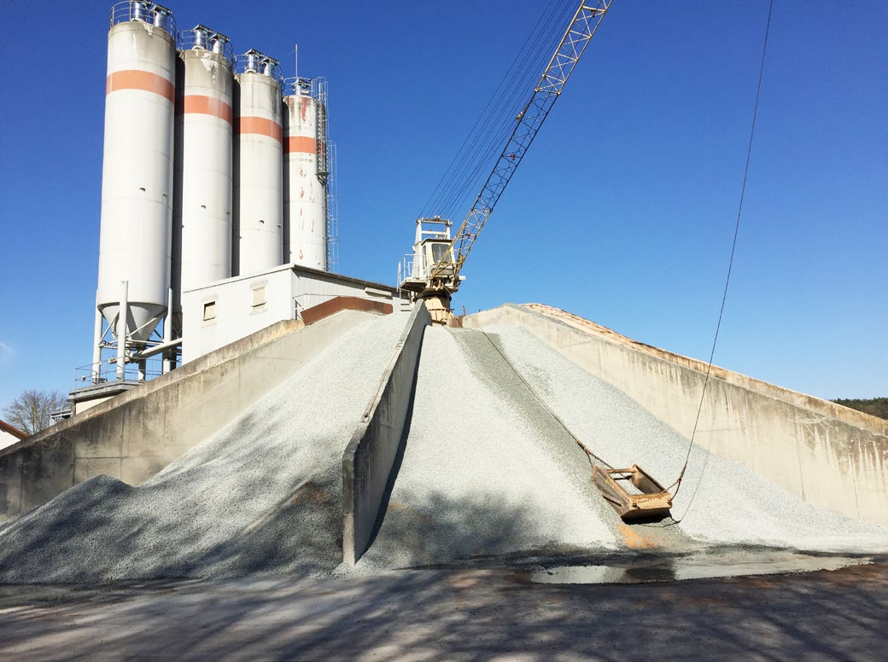
Abb. 1 Frischbeton Sternanlage mit Kabine
Was erwartet Sie auf den folgenden Seiten?
In diesem Teil der Branchenregel "Betonindustrie" wird auf die Herstellung von Frischbeton eingegangen. Dies beinhaltet den Umgang mit den Betonausgangsstoffen sowie das Anmischen von Beton in Transportbetonwerken und in Betonfertigteilwerken.
Dabei wird auf die wesentlichen Gefährdungen an den typischen Arbeitsplätzen und Tätigkeiten in den Herstellungsbetrieben hingewiesen und geeignete Maßnahmen zur Minimierung und Beseitigung aufgezeigt.
Auf einen Blick erhalten Sie, auf die einzelnen Arbeitsplätze in Ihrem Unternehmen bezogen, die wichtigsten Informationen, um für die Sicherheit und Gesundheit Ihrer Beschäftigten zu sorgen.
Diese Branchenregel wird nicht alle in Ihrem Unternehmen auftretenden Gefährdungen vollständig erfassen können. Auch kann sie eine individuell auf die Arbeitsplätze in Ihrem Betrieb erstellte Gefährdungsbeurteilung nicht ersetzen. Die Informationen auf den folgenden Seiten sollen Ihnen jedoch eine praxisnahe Grundlage geben, um die Gefährdungsbeurteilung zu erstellen, zu aktualisieren und die Unterweisung Ihrer Beschäftigten durchzuführen.
Oft werden in den Frischbetonwerken für bestimmte Arbeiten, z. B. dem Transport des Frischbetons oder Reinigungs- und Instandsetzungsarbeiten, Fremdfirmen mit entsprechenden Werkverträgen beauftragt. Dies bedeutet, dass Sie als beauftragender Unternehmer oder beauftragende Unternehmerin sich bei den Verantwortlichen der Fremdunternehmen zu vergewissern haben, dass deren Beschäftigte, die in Ihrem Betrieb tätig werden, hinsichtlich der Gefahren für ihre Sicherheit und Gesundheit während ihrer Tätigkeit in Ihrem Betrieb angemessene Anweisungen und Unterweisungen erhalten haben.
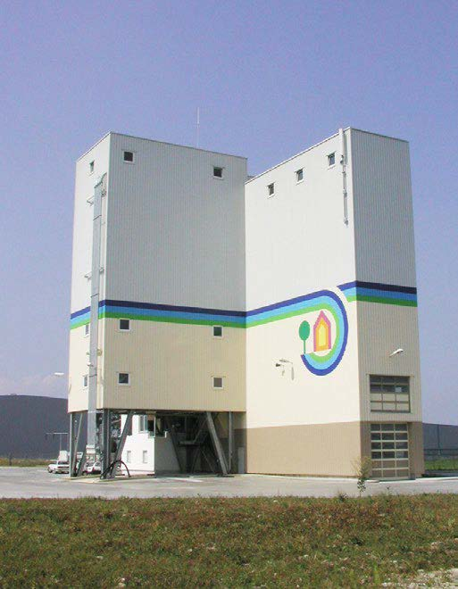
Abb. 2 Eingehauste Frischbetonanlage
3.1 Lagerung und Umgang mit Ausgangs- und Hilfsstoffen
3.1.1 Gesteinskörnungen – Umgang und Lagerung
Bei Lagerung und Umgang mit Gesteinskörnungen ergeben sich unterschiedliche Gefährdungen, z. B. verschüttet werden bei der Beseitigung von Materialbrücken.
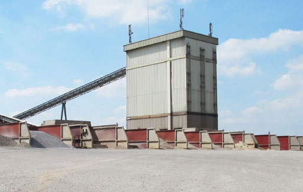
|
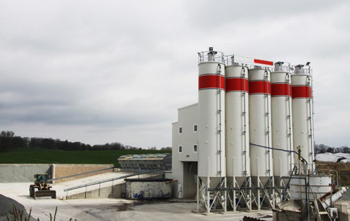
|
Abb. 3 Frischbetonanlage mit Materialboxen |
Abb. 4 Lagerungsboxen mit Rampe und Leitplanke |
|
Weitere Informationen
|
- Produktinformationen der Hersteller
- DIN EN 620:2011-07 "Stetigförderer und Systeme – Sicherheits- und EMV-Anforderungen an ortsfeste Gurtförderer für Schüttgut"
|
|
Gefährdungen
|
- Ange- oder Überfahren werden durch Fahrzeuge.
- Umkippen oder Umstürzen von Fahrzeugen und Arbeitsmaschinen beim Abladen oder Befüllen der Lagerboxen.
- Lärm beim Abkippen der Gesteinskörnungen.
- Verletzungen beim Fahren mit hochstehender Fahrzeugmulde, z. B. durch Anstoßen an feststehenden Teilen oder Berühren von stromführenden Leitungen.
- Staubentwicklung beim Abkippen der angelieferten Gesteinskörnungen.
- Verletzungen durch Einsinken während des Materialabzugs.
- Verschüttet bzw. getroffen werden bei der Beseitigung von Materialbrücken.
- Verletzungen durch z. B. Werkzeuge, Verschlusseinrichtungen bei der unsachgemäßen Beseitigung von Stopfern und Materialbrücken.
- Verschüttet bzw. getroffen werden auf/neben den Lagerungshalden durch das Material.
- Stolpern, Stürzen und Ausrutschen auf Material im Bereich der Lagereinrichtungen.
- Verletzungsgefahr aufgrund schlechter Sichtverhältnisse, z. B. wegen mangelnder Ausleuchtung oder defekten und verschmutzten Leuchtmitteln, schlecht einsehbarer Bereiche.
- Einzugsgefahr an Stetigförderern im Bereich der Materialaufgabe, z. B. Gurtförderer oder Becherwerk.
Diese Gefährdungen können Sie mit folgenden Maßnahmen reduzieren:
|
|
Maßnahmen
|
- Sorgen Sie dafür, dass sich während des Betriebes keine unbefugten Personen im Gefahrenbereich aufhalten, z. B. durch das Anbringen von Beschilderungen, Markierungen, Absperrungen.
- Standsichere Aufstellung des Gerätes oder Fahrzeuges gewährleisten. Standflächen sollen eben und ohne Schlaglöcher sein.
- Beachten Sie, soweit vorhanden, die zulässigen Neigungswinkel der Fahrzeughersteller.
- Achten Sie darauf, dass die Neigungswinkel der Rampen so ausgebildet sind, dass sie mit den von Ihnen eingesetzten Fahrzeugen sicher befahren werden können.
- Sorgen Sie an Abkippstellen mit Absturzgefahr für ausreichend dimensionierte Anschläge (1/3 Radhöhe).
- Um eine gefahrlose Anlieferung der Gesteinskörnungen zu gewährleisten, sorgen Sie für ausreichende Übersichtlichkeit im Lager- und Anlieferungsbereich der Gesteinskörnungen sowie sichere und ausreichende Verkehrswege.
- Stellen Sie sicher, dass die Kippstellen ausreichend beleuchtet sind.
- Um die Staubentwicklung zu vermeiden, sind Lagerplätze und Verkehrswege sauber zu halten, z. B. durch regelmäßige Reinigung mittels Kehrsaugwagen und ggf. Benetzen der Verkehrswege mit Wasser.
- Sorgen Sie für Ordnung und Sauberkeit auf dem gesamten Betriebsgelände, insbesondere im Bereich der Lagereinrichtungen.
- Bei Arbeiten im Abkippbereich und Lärmeinwirkung ist bei Überschreitung des oberen Auslösewertes Gehörschutz zu tragen.
- Wählen Sie den Verschleißschutz in den Materialübergaben so aus, dass die Lärmentwicklung beim Befüllen minimiert wird.
- Sorgen Sie dafür, dass Lieferfahrzeuge nach der Entladung nur mit abgesenkter Fahrzeugmulde bewegt werden.
- Unterweisen Sie Personen, die in diesem Bereich tätig sind, über die Gefährdungen im Bereich der Lagerhaltung.
- Das Betreten der Halden mit Materialabzug durch Personen ist zu verhindern.
- Zugängliche Materialboxen mit Unterflurabzug sind, z. B. mit Gitterrosten, abzudecken.
- Sollte ein Material zu Brückenbildung neigen, installieren Sie geeignete technische Maßnahmen zur automatischen Beseitigung der Materialbrücken, z. B. Rüttler, Luftkanonen.
- Sorgen Sie dafür, dass Stetigförderer im sicheren Zustand betrieben werden.
- Verbessern Sie schlechte Sichtverhältnisse, z. B. durch optimale Ausleuchtung oder Kamerasysteme für schlecht einsehbare Bereiche.
- Stellen Sie sicher, dass beim Abkippvorgang die Achsen der Zugmaschine und des Aufliegers des Fahrzeuges in einer Linie stehen.
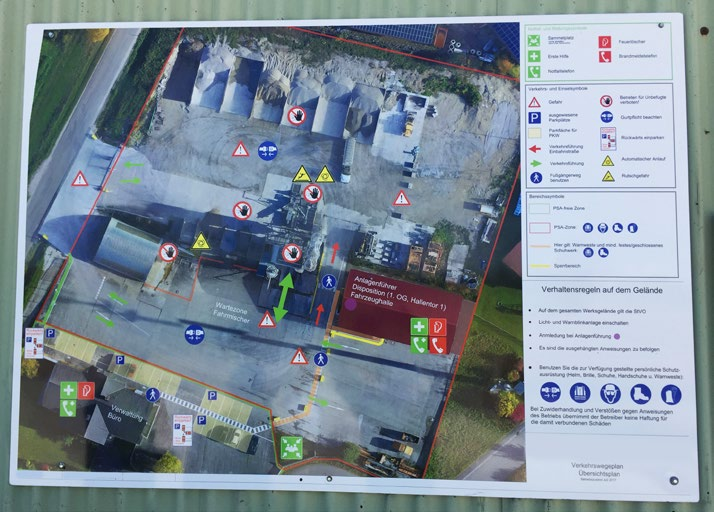
|
Beste Praxis
Erstellen Sie ein Verkehrswegekonzept |
Abb. 5 Verkehrswegekonzept |
|
3.1.2 Bindemittel – Umgang und Lagerung
Um Frischbeton mit spezifischen Eigenschaften herstellen zu können, werden Bindemittel mit verschiedenen chemischen und physikalischen Eigenschaften eingesetzt. Durch diese Bindemittel treten unterschiedliche Gefährdungen auf.
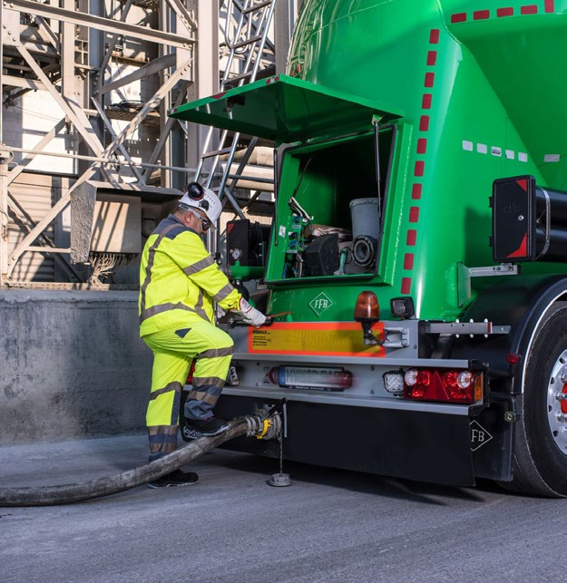
|
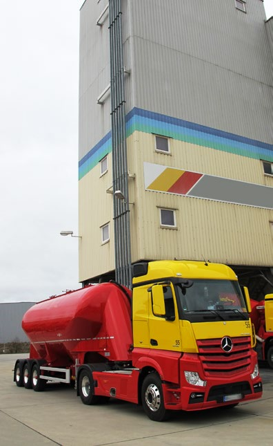
|
Abb. 6 Vorbereitung zur Entladung von Zement |
Abb. 7 Silofahrzeug wird entladen |
|
Gefährdungen
|
- Ange- oder Überfahren werden durch Fahrzeuge.
- Reizungen von Haut, Atemwegen und Schleimhäuten und Gefahr ernster Augenschäden durch z. B. Austreten von Bindemitteln bei nicht ordnungsgemäß angeschlossenen Fördereinrichtungen, bei Reinigung von Rohrleitungen oder der Filteranlage, bei Probeentnahme.
- Verletzungen durch Bersten bzw. Platzen von Lager- und Fördereinrichtungen bei z. B. zu hohem Arbeitsdruck und nicht funktionierenden Sicherheitseinrichtungen oder mangelhaften Schlauchleitungen.
- Staubentwicklung, z. B. beim Reinigen der Filteranlagen.
- Absturzgefahr bei der Probennahme, z. B. vom Fahrzeug.
- Absturz bei Arbeiten auf den Bindemittelsilos.
- Lärm durch Kompressoranlagen beim Fördern von Bindemittel in Silos.
- Ausrutschen, Stürzen, Getroffen werden, insbesondere bei der Nachtanlieferung.
- Heben und Tragen von schweren Lasten, z. B. beim Anschließen und Verlegen der Schlauchleitungen.
Diese Gefährdungen können Sie mit folgenden Maßnahmen reduzieren:
|
|
Maßnahmen
|
- Stellen Sie Ihren Beschäftigten persönliche Schutzausrüstungen wie Sicherheitsschuhe, Schutzhelm, dichtschließende Schutzbrillen, z. B. Korbschutzbrillen, geeignete Schutzhandschuhe, bedeckende Kleidung und ggf. Gehörschutz und Staubmaske zur Verfügung und sorgen Sie dafür, dass diese getragen werden.
- Sorgen Sie dafür, dass die Siloanlagen mit funktionsfähigen Kontrollsystemen für Überdruck und Überfüllung ausgerüstet sind.
- Überprüfen Sie in regelmäßigen Abständen die Funktionsfähigkeit Ihrer Filtereinrichtungen und lassen Sie diese gemäß den Herstellerangaben reinigen.
- Lassen Sie regelmäßig die Schlauchanschlusskupplungen, die Rohrleitungen und Schläuche kontrollieren und tauschen Sie diese bei Undichtigkeiten aus. Zur optimalen Dichtheit der Befüllleitung können z. B. Sicherungsschellen für die Kupplungsverbindungen verwendet werden.
- Unterweisen Sie Ihre Beschäftigten, die in diesem Bereich tätig sind, in der regelgerechten Verwendung aller Befüllungseinrichtungen.
- Weisen Sie den Fahrer oder die Fahrerin des Silofahrzeuges an, den Befüllvorgang permanent zu überwachen. Die notwendige PSA ist zu tragen.
- Rüsten Sie die Silos an den Bereichen der Ausläufe mit Reparaturabsperrschiebern aus, um ein unkontrolliertes Auslaufen der Silos, z. B. bei Wartungsarbeiten am Fördermittel, zu verhindern.
- Stellen Sie für Notfälle schnell erreichbare Augenspülungseinrichtungen zur Verfügung.
- Kontrollieren Sie regelmäßig die Dichtheit der flexiblen Übergänge zu den Fördereinrichtungen, z. B. Bindemittelförderer. Stellen Sie sicher, dass für Wartungsarbeiten ein sicherer Zugang zum Silodeckel und dort eine regelgerechte Absturzsicherung vorhanden ist.
- Verhindern Sie, dass Unbeteiligte in den Arbeitsbereich gelangen.
- Neben laufenden Kompressoren ist Gehörschutz zu tragen.
- Berücksichtigen Sie bei dem Entladevorgang Alleinarbeit, z. B. in der Nacht bzw. am Wochenende.
- Prüfen Sie bei der Verlegung von Förderschläuchen die Verwendung von Hebehilfen, z. B. Zangen, Klammern.
- Sorgen Sie für die Verwendung von Hebehilfen z. B. Tragegurte, Einhängegriffe bei Gewichten mit mehr als 15 bzw. 25 kg und vermeiden Sie das regelmäßige Heben und Tragen von schweren Lasten. (Beurteilung z. B. nach der Leitmerkmalmethode der BAuA).
- Beachten Sie die aktuellen Sicherheitsdatenblätter, technischen Merkblätter und erstellen Sie für die Arbeitsplätze und den Umgang mit den Gefahrstoffen Betriebsanweisungen.
- Achten Sie darauf, dass die Kennzeichnung der Lagereinrichtung eindeutig und aktuell ist (mindestens Name des Gefahrstoffes und Gefahrstoff-Piktogramme).
|
3.1.3 Betonzusatzstoffe – Umgang und Lagerung
Bei der Frischbetonherstellung werden eine Reihe von Zusatzstoffen beigemischt. Hierbei handelt es sich um reaktive und inerte Stoffe sowie Fasern z. B. aus Stahl, Kunststoff und Glas. Bei der Lagerung und Handhabung von diesen Zusatzstoffen treten besondere Gefährdungen auf, z. B. ist mit dem Austreten dieser aus den Lagerungsgebinden zu rechnen.
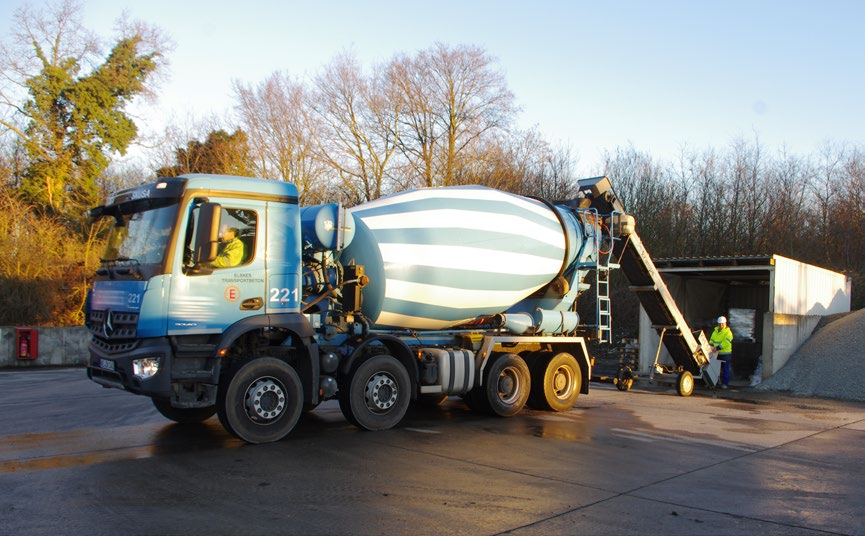
Abb. 8 Sicheres und ergonomisch günstiges Einbringen von Stahlfasern in den Fahrmischer
|
Weitere Informationen
|
- DGUV Information 208-043 "Sicherheit von Regalen"
- DGUV Information 209-001 "Sicherheit beim Arbeiten mit Handwerkzeugen"
- Sicherheitsdatenblätter der Hersteller von Betonzusatzstoffen
- Leitmerkmalmethode der BAuA zur Beurteilung von Heben, Halten, Tragen
- VDZ-Merkblatt: Zement-Merkblatt Betontechnik B3 2.2014 "Betonzusätze – Zusatzmittel und Zusatzstoffe"
|
|
Gefährdungen
|
|
Staubförmige Zusatzstoffe
(z. B. Steinkohleflugasche, Trass- und Hüttensand- und Gesteinsmehle, Microsilika oder Pigmente)
- Verletzungen durch Bersten bzw. Platzen von Lager- und Fördereinrichtungen, z. B. bei zu hohem Arbeitsdruck, nicht funktionierenden Sicherheitseinrichtungen sowie mangelhaften Schlauchleitungen.
- Staub, z. B. beim Reinigen der Filteranlagen.
- Lärm durch Kompressoranlagen beim Fördern von Betonzusatzstoffen.
- Bei händischer Zugabe in Kleingebinden besteht die Gefahr, in den Aktionsbereich des Zwangsmischers zu geraten.
- Bei händischer Zugabe an anderen Stellen, z. B. Kübelaufzug, Betonmischer, Fahrmischer, Förderbänder, besteht Einzugs-, Quetsch-, Absturzgefahr.
- Belastung des Muskel- und Skelettsystems durch die händische Zugabe, z. B. durch schwere Gebinde oder dauerhafte Dosierung.
- Stürzen, Stolpern über Lagerprodukte in Lagerräumen.
- Umstürzen und Zusammenbrechen der Regale durch Überlastung.
- Herunterfallen von Lagergut.
Zusatzstoffe als Slurry
(Microsilika oder Pigmente)
- Verletzungen an Augen und Haut durch Spritzer der Slurries, z. B. beim Reinigen der Behältnisse.
- Verletzungen durch Bersten bzw. Platzen von Lager- und Fördereinrichtungen, z. B. bei zu hohem Arbeitsdruck und nicht funktionierenden Sicherheitseinrichtungen, mangelhaften Schlauchleitungen.
- Stürzen, Stolpern über Lagerprodukte in Lagerräumen, z. B. auch anfallenden Verpackungsmaterialien.
- Umstürzen und Zusammenbrechen der Regale durch Überlastung.
- Herunterfallen von Lagergut.
|
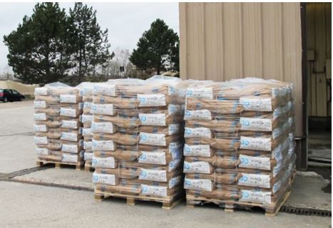
|
Abb. 9 Stahlfasern |
Abb. 10 Stahlfasergebinde |
Fasern
(Stahl-, Glas- oder Kunststofffasern)
- Bei händischer Zugabe in Kleingebinden, z. B. Stahlfasern, besteht die Gefahr in den Aktionsbereich des Zwangsmischers zu geraten.
- Belastung des Muskel- und Skelettsystems durch die händische Zugabe, z. B. wegen zu schwerer Gebinde.
- Schnitt- und Stichverletzungen durch Fasern und Messer.
- Absturz von Personen bei der Faserzugabe z. B. von hochgelegenen Lager-Regalflächen oder Leitern.
- Stürzen, Stolpern über Lagerprodukte und anfallenden Verpackungsmaterialien in Lagerräumen.
- Umstürzen und Zusammenbrechen der Regale durch Überlastung.
- Herunterfallen von Lagergut.
- Getroffen werden von herumfliegenden Stahlfasern bei der Verwendung eines Stahlfasergebläses.
Diese Gefährdungen können Sie mit folgenden Maßnahmen reduzieren:
|
|
Maßnahmen
|
- Beachten Sie die aktuellen Sicherheitsdatenblätter, technischen Merkblätter und erstellen Sie für die Arbeitsplätze und den Umgang mit den Gefahrstoffen Betriebsanweisungen.
Staubförmige Zusatzstoffe
(Steinkohleflugasche, Trass- und Hüttensand- und Gesteinsmehle, Microsilika oder Pigmente)
- Stellen Sie Ihren Beschäftigten persönliche Schutzausrüstungen wie Sicherheitsschuhe, Schutzhelm, geeignete Schutzhandschuhe und Schutzbrillen, z. B. Korbbrillen, bedeckende Kleidung und ggf. Gehörschutz oder Staubmaske zur Verfügung und sorgen Sie dafür, dass diese getragen wird.
- Sorgen Sie dafür, dass die Siloanlagen mit funktionsfähigen Kontrollsystemen für Überdruck und Überfüllung ausgerüstet sind.
- Überprüfen Sie in regelmäßigen Abständen die Funktionsfähigkeiten Ihrer Filtereinrichtungen und lassen Sie diese regelmäßig reinigen und warten.
- Lassen Sie regelmäßig die Schlauchanschlusskupplungen und Schläuche kontrollieren und tauschen Sie defekte Einrichtungen unmittelbar aus.
- Sorgen Sie dafür, dass die Schlauchleitungen ordnungsgemäß verlegt werden und sehen Sie Kantenschutz vor.
- Unterweisen Sie Ihre Beschäftigten, die in diesem Bereich tätig sind, in der regelgerechten Verwendung aller Befüllungseinrichtungen.
- Lassen Sie regelmäßig die Schlauchanschlusskupplungen, die Rohrleitungen und Schläuche kontrollieren und tauschen Sie diese bei Undichtigkeiten aus. Zur optimalen Dichtheit der Befüllleitung können z. B. Sicherungsschellen für die Kupplungsverbindungen verwendet werden.
- Weisen Sie den Fahrer oder die Fahrerin des Silofahrzeuges an, den Befüllvorgang permanent zu überwachen.
- Kontrollieren Sie im Bereich der Siloausläufe die Dichtheit der flexiblen Übergänge zu den Fördereinrichtungen, z. B. Schneckenförderer.
- Prüfen Sie bei der Verlegung von Förderschläuchen die Verwendung von Hebehilfen, z. B. Zangen, Klammern.
- Bei der händischen Zugabe von staubförmigen Zusatzstoffen sorgen Sie dafür, dass die Beschäftigten nicht mit beweglichen Teilen des Zwangsmischers oder anderen maschinellen Anlagen in Kontakt kommen. Eine solche Zugabe ist zu minimieren.
- Gestalten Sie die Arbeitsplätze, an denen mit Zusatzstoffen umgegangen wird so, dass keine Absturzgefahr besteht, z. B. mit Absturzsicherungen.
- Sorgen Sie in Lagerräumen für ebene und saubere Verkehrswege.
- Achten Sie darauf, dass die Regale mit Lastangaben versehen sind, zulässige Regallasten nicht überschritten werden und Materialien nicht umfallen oder herunterfallen können.
Zusatzstoffe als Slurry
(Microsilika oder Pigmente)
- Sorgen Sie dafür, dass die Behältnisse mit funktionsfähigen Überfülleinrichtungen sowie Reinigungsöffnungen und -möglichkeiten ausgerüstet sind. Die Behälter müssen für die Beschäftigten sicher zugänglich sein.
- Lassen Sie regelmäßig die Schlauchanschlusskupplungen und Schläuche kontrollieren.
- Kontrollieren Sie im Bereich der Gebinde- und Vorratsbehälterausläufe die Dichtheit.
- Stellen Sie Ihren Beschäftigten persönliche Schutzausrüstungen wie Sicherheitsschuhe, Schutzhelm, Schutzbrille, geeignete Schutzhandschuhe, bedeckende Kleidung und ggf. Gehörschutz bzw. auch Gesichtsschutz zur Verfügung und sorgen Sie dafür, dass diese getragen wird.
- In Lagerräumen sorgen Sie für ebene und saubere Verkehrswege.
- Achten Sie darauf, dass die Regale mit Lastangaben versehen sind, zulässige Regallasten nicht überschritten werden und Materialien nicht umfallen oder herunterfallen können.
Fasern
(Stahl-, Glas- oder Kunststofffasern)
- Gestalten Sie die Arbeitsplätze, an denen Fasern händisch zugegeben werden, so, dass keine Absturzgefahr besteht, z. B. mit Absturzsicherungen.
- Sorgen Sie bei der händischen Zugabe von Fasern dafür, dass dies von einem Arbeitsplatz ohne Absturzgefahr mit sicherem Stand erfolgt.
- Bei der Zugabe der Fasern muss vermieden werden, dass Beschäftigte mit beweglichen Teilen des Zwangsmischers in Kontakt kommen.
- Sorgen Sie für die Verwendung von Hebehilfen z. B. Tragegurte, Einhängegriffe bei Gewichten mit mehr als 15 bzw. 25 kg und vermeiden Sie das regelmäßige Heben und Tragen von schweren Lasten. (Beurteilung z. B. nach der Leitmerkmalmethode der BAuA).
- Stellen Sie Ihren Beschäftigten geeignete PSA, insbesondere durchstichsicheren, schnittsicheren Handschutz zur Verfügung.
- In Lagerräumen sorgen Sie für ebene und saubere Verkehrswege.
- Achten Sie darauf, dass die Regale mit Lastangaben versehen sind, zulässige Regallasten nicht überschritten werden und Materialien nicht umfallen oder herunterfallen können.
- Stellen Sie sichere Leitern, z. B. Podestleitern, zur Verfügung.
- Stellen Sie Schutzbrillen bei der Verwendung von Stahlfasergebläsen zur Verfügung.
|
3.1.4 Betonzusatzmittel – Umgang und Lagerung
Bei der Herstellung von Frischbeton kommen unterschiedliche Betonzusatzmittel, z. B. Betonverflüssiger (BV), Fließmittel (FM), Luftporenbildner (LP), Verzögerer (VZ), zum Einsatz.
Diese Mittel beeinflussen die physikalischen und chemischen Eigenschaften des Betons. Von diesen Stoffen gehen bei der Lagerung und Handhabung unterschiedliche Gefährdungen aus.
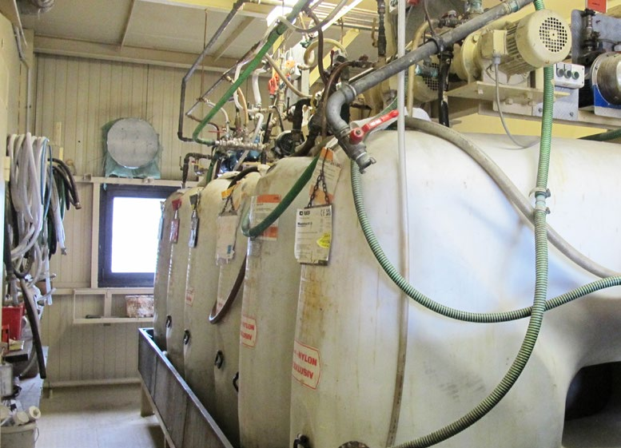
Abb. 11 Lagerung von Betonzusatzmitteln
|
Weitere Informationen
|
- Sicherheitsdatenblätter und technische Merkblätter der Hersteller
- BG RCI-Merkblatt A 014 "Gefahrgutbeförderung in PKW und Kleintransportern"
|
|
Gefährdungen
|
- Durch Zusatzmittel sind Einwirkungen auf den menschlichen Organismus möglich, z. B. auf Haut, Schleimhäute und Augen. Dies ist stoffspezifisch und ist dem jeweils aktuellen Sicherheitsdatenblatt zu entnehmen.
- Bildung von Dämpfen bei schlecht belüfteten Lagerräumen.
- Ausrutschen, Stolpern, Stürzen beim Betreten der Lagerräume.
- Abstürzen z. B. bei Arbeiten auf Behältern im Lagerraum.
- Verletzungen durch
- Aufplatzen von Gebinden
- Undichtigkeiten an Leitungen und Pumpen
- Aufnehmen von ausgelaufenen Zusatzmitteln
- Quetschen, Scheren beim Umgang mit den Gebinden im Lagerraum.
- Elektrische Gefährdungen bei Arbeiten im Feuchtbereich.
Diese Gefährdungen können Sie mit folgenden Maßnahmen reduzieren:
|
|
Maßnahmen
|
- Beachten Sie die aktuellen Sicherheitsdatenblätter sowie technischen Merkblätter und erstellen Sie für die Arbeitsplätze und den Umgang mit den Gefahrstoffen Betriebsanweisungen.
- Lassen Sie die Lagerräume regelmäßig reinigen.
- Stellen Sie Ihren Beschäftigten persönliche Schutzausrüstungen wie Sicherheitsschuhe, Schutzhelm, Schutzbrille, geeignete Schutzhandschuhe (zum Beispiel nitrilgetränkte Baumwollhandschuhe) zur Verfügung und sorgen Sie dafür, dass diese getragen wird.
- Bewahren Sie die Behälter ordnungsgemäß verschlossen an einem trockenen, gut belüfteten Lagerraum auf.
- Bemessen Sie die Lagerräume so, dass die Gebinde sicher aus- und eingelagert werden können und ein sicherer Zugang vorhanden ist.
- Sorgen Sie dafür, dass ausreichende Beleuchtung in allen Arbeits- und Verkehrsbereichen vorhanden ist.
- Achten Sie darauf, dass alle Arbeitsbereiche ohne Absturzgefahr zu erreichen sind, insbesondere Pumpen, Ventile und Anschlussleitungen.
- Halten Sie die Gebinde während des Transports immer geschlossen.
- Halten Sie Augenspüleinrichtungen an geeigneten Orten vor.
- Wählen Sie geeignete Lagerbehältnisse aus.
- Verwenden Sie für das jeweilige Zusatzmittel geeignete Pumpen und Schlauchleitungen und prüfen Sie diese regelmäßig.
- Sorgen Sie dafür, dass bei der Lagerung der Gebinde die Anschlüsse der Pumpen sich nicht in Augenhöhe befinden.
- Achten Sie darauf, dass die Kennzeichnung der Gebinde eindeutig und aktuell ist, auch im Hinblick auf die TRGS 201 (mindestens Name des Gefahrstoffes und Gefahrstoff-Piktogramme).
- Planen Sie die Beseitigung von ausgelaufenen Betonzusatzmitteln als Folge von Havarieschäden. Halten Sie technische Einrichtungen und Bindemittel zur Verfügung, um ausgelaufene Betonzusatzmittel aufnehmen zu können.
- Sorgen Sie dafür, dass beim Anmischen von Zusatzmitteln aus Konzentraten sichere Mischbehältnisse und Einrichtungen verwendet werden. Halten Sie den Mischplatz sauber.
- Im Bereich mit erhöhter elektrischer Gefährdung müssen Sie zum Schutz Ihrer Beschäftigten besondere Maßnahmen treffen. Das sind z. B. Trenntransformatoren, Fehlerstrom-Schutzeinrichtungen, Schutzkleinspannungen.
- Achten Sie darauf, dass für die Lagerung unterschiedlicher Betonzusatzmittel geeignete Tanks verwendet werden und prüfen diese nach Herstellerangaben.
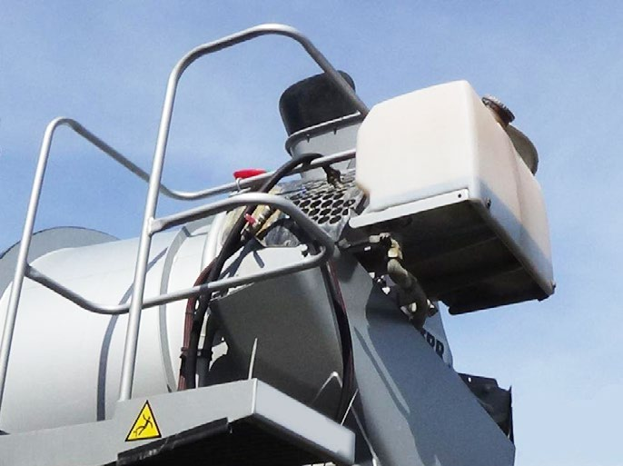
Abb. 12 Zusatzmittelbehälter an Fahrmischer
|
3.1.5 Frischbeton mit hohen oder niedrigen Temperaturen
Bei extremen äußeren Witterungsbedingungen muss die Temperatur von Frischbeton geregelt werden, um einerseits ein Erfrieren des Betons bei unter + 5°C zu vermeiden und andererseits zu hohe Betontemperaturen von über + 30°C zu verhindern. Beides führt zu Mängeln im Festbeton.

Abb. 13 Kühlung durch Lanzen mit flüssigem Stickstoff
|
Weitere Informationen
|
- Sicherheitsdatenblätter
- Bedienungsanleitungen der eingesetzten Anlagen
- Technische Merkblätter
|
Temperaturerhöhung von Frischbeton
Bei niedrigen äußeren Temperaturen müssen schon bei der Herstellung Maßnahmen ergriffen werden, um zu gewährleisten, dass der Frischbeton normgerecht eingebaut werden kann. Hierfür kommen unterschiedliche Verfahrensweisen zum Einsatz, bei denen Wasser oder Gesteinskörnungen erhitzt werden. Hierzu kommen Wasserdampf oder Heißluft zum Einsatz.
|
Gefährdungen
|
- Verbrennungs- oder Verbrühungsgefahr durch heiße Medien
- Verletzungsgefahr durch Undichtigkeit oder Bersten von Druckbehältern
Diese Gefährdungen können Sie mit folgenden Maßnahmen reduzieren:
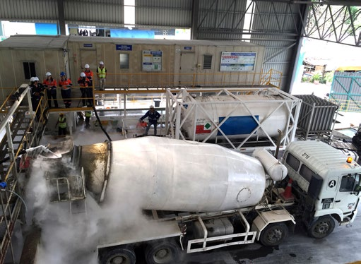
Abb. 14 Kühlung durch Lanzen mit flüssigem Stickstoff
|
|
Maßnahmen
|
- Beachten Sie die Bedienungsanleitungen der Hersteller von Dampferzeugern oder Heißluft-Heizungen und Gebläseanlagen und erstellen Sie die notwendigen Betriebsanweisungen.
- Sorgen Sie dafür, dass die Heizleitungen und Dampf führenden Leitungen isoliert sind und der direkte Hautkontakt vermieden wird.
- Überprüfen Sie die Anlagen regelmäßig auf Dichtheit und Druckbeständigkeit z. B. durch zugelassene Überwachungsstellen.
- Stellen Sie Ihren Beschäftigten persönliche Schutzausrüstungen wie Sicherheitsschuhe, Schutzhelm, Schutzbrille oder Gesichtsschutzschild, geeignete Schutzhandschuhe (zum Beispiel nitrilgetränkte Baumwollhandschuhe) und ggf. Gehörschutz zur Verfügung und sorgen Sie dafür, dass diese getragen wird.
- Kontrollieren Sie regelmäßig den ordnungsgemäßen Zustand der Wasser-, Dampf- und Gasleitungen inkl. aller Anschlüsse, Kupplungen, Schieber und Leitungen.
- Kennzeichnen Sie alle Leitungen eindeutig, um Verwechslungsgefahren zu vermeiden.
Kühlen von Frischbeton
Bei hohen Außentemperaturen müssen bei der Herstellung Maßnahmen ergriffen werden, um zu gewährleisten, dass der Frischbeton normgerecht eingebaut werden kann. Hierfür kommen unterschiedliche Techniken zum Einsatz. Entweder werden die Betonausgangsstoffe oder der fertige Frischbeton selbst gekühlt. Alternativ kann auch Eis oder Schnee bei dem Mischprozess zugegeben werden. Die Kühlung der Ausgangsstoffe in den Materialboxen, -silos oder -tanks erfolgt durch z. B. Einleitung von Flüssigstickstoff mittels Lanzen, über Kühlschlangen mit Kühlmedien im Material, Einleitung von Kaltluft.
Beim Mischvorgang kann der Frischbeton ebenfalls gekühlt werden. Hierfür werden Scherbeneis oder künstlicher Schnee gemeinsam mit den Gesteinskörnungen in den Zwangsmischer gegeben. Eine dritte Variante ist die Zugabe von Flüssigstickstoff über Lanzen in den Fahrmischer. Die Lanzen werden am Einfülltrichter der Fahrmischertrommel eingebracht.
Die größte Gefährdung für die Beschäftigten geht von den kalten Medien Eis, Schnee oder Flüssigstickstoff aus. Das Eis oder der Schnee haben nach ihrer Herstellung eine Temperatur von ca. –7°C. Flüssigstickstoff hat eine Temperatur von fast –200° C.
|
|
Gefährdungen
|
- Erfrierung durch Kühlmittel z. B. Stickstoff, Eis
- Ausrutschen / Abrutschen / Abstürzen im Umfeld der Kühlmittel
- Erstickungsgefahr durch hohe Konzentration von Stickstoff
- Eingezogen bzw. gequetscht werden bei der manuellen Zugabe von Kühlmitteln
- in den Betonmischer
- in den Fahrmischer
- auf das Zubringerband oder
- in den Kübel.
Diese Gefährdungen können Sie mit folgenden Maßnahmen reduzieren:
|
|
Maßnahmen
|
- Verhindern Sie beim Einsatz von Kühlmitteln glatte und rutschige Arbeitsplätze und Verkehrswege, z. B. durch Streuen.
- Stellen Sie sicher, dass bei der manuellen Zugabe von Kühlmitteln in den Betonmischer ein Hineingreifen nicht möglich ist.
- Gestalten Sie die Zugabeöffnung so, dass die Kühlmittel verstopfungsfrei in den Betonmischer eingebracht werden können.
- Vermeiden Sie die Ansammlung von Stickstoff in engen Räumen und sorgen Sie für ausreichende Belüftung.
- Verwenden Sie speziell auf den Fahrmischer abgestimmte Kühllanzen, um z. B. Einzugs- oder Quetschgefahren auszuschließen.
- Achten Sie darauf, dass die Bedienungsanleitungen der Kühlanlagen und die Herstellerangaben der Kühlmittel berücksichtigt werden und erstellen Sie entsprechende Betriebsanweisungen, worin insbesondere auf die Prüfung, Kontrolle und Lagerung der Anlagen einzugehen ist.
- Beachten Sie die aktuellen Sicherheitsdatenblätter sowie technischen Merkblätter und erstellen Sie für den Umgang mit den Gefahrstoffen, insbesondere Stickstoff, Betriebsanweisungen.
- Stellen Sie Ihren Beschäftigten beim Umgang mit kalten Medien geeignete persönliche Schutzausrüstungen wie Handschuhe, Sicherheitsschuhe, Schutzbrille oder Gesichtsschutzhaube zur Verfügung und sorgen Sie dafür, dass diese getragen wird.
|
3.2 Betreiben der Frischbetonmischanlage
3.2.1 Steuerstand und Mischbetrieb
In den Betonmischanlagen wird der gesamte Ablauf durch den Anlagenführer oder die Anlagenführerin gesteuert. Hierzu zählen im Wesentlichen die folgenden Aufgaben:
- Starten und Hochfahren der Anlagen
- Kontrollgänge in der Anlage
- Für Mischmeister in einem Transportbetonwerk kommt erschwerend hinzu, dass sie häufig für folgende Vorgänge zuständig sind:
- Disposition der Fahrmischer und Betonpumpen
- Disposition der Ausgangsstoffe
- Umgang mit Kunden, Baustellen, Zentraldisposition
- Umgang mit Störungen und deren Beseitigung
Ein großes Problem stellt die teilweise hohe psychische Belastung durch die geforderte räumliche und zeitliche Flexibilität der Einsatzzeit der Beschäftigten dar.
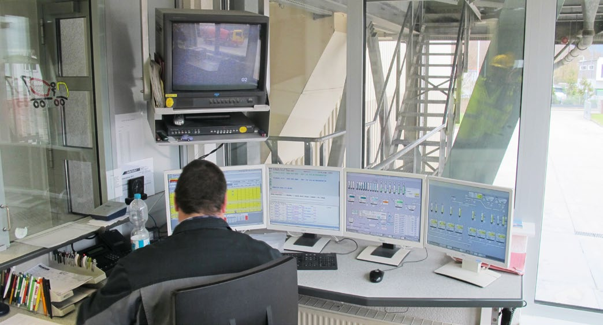
Abb. 15 Moderner Steuerstand im Frischbetonwerk
|
Gefährdungen
|
- Psychische Belastung durch Informationsflut, Kommunikationsprobleme, z. B. mit Kundinnen und Kunden oder Fahrern bzw. Fahrerinnen.
- Psychische Belastung durch unregelmäßige Arbeitszeiten, Überstunden, unvorhersehbare Störungen und Schichtarbeit.
- Stolpern, Stürzen auf Verkehrswegen, z. B. durch Unebenheiten, Glatteis oder Nässe.
- Ausbleiben einer schnellen Ersten Hilfe insbesondere bei Arbeiten, welche allein durchgeführt werden müssen.
- Getroffen werden von herabfallenden Gegenständen, z. B. von Gesteinskörnungen.
- Angefahren werden auf dem Betriebsgelände.
- Belastungen durch ungünstige Ergonomie des Arbeitsplatzes, z. B. der Bildschirmarbeitsplätze.
- Lärm durch z. B. Mischanlage, Fahrzeuge.
- Hohe Temperaturen in der Kabine durch Elektroschalteinrichtungen und Sonneneinstrahlung.
- Elektrische Gefährdung durch z. B. zur Wärmeableitung geöffnete Schaltschränke oder Verwendung von elektrischen Betriebsmitteln in feuchten Bereichen.
- Anstoß- und Stoßgefährdung z. B. bei Kontrollgängen.
- Verletzungen durch Hochdruckwasserstrahl bei automatisierten Reinigungsanlagen.
- Gesundheitsgefährdung durch Temperaturwechsel zwischen Aufenthalt in der Steuerkabine und Außenbereich in der kalten Jahreszeit.
Diese Gefährdungen können Sie mit folgenden Maßnahmen reduzieren:
|
|
Maßnahmen
|
- Entlasten Sie den Anlagenbediener oder die Anlagenbedienerin durch Verlagerung von z. B. Kundenkommunikation, Disposition, Fahrzeugmanagement.
- Organisieren Sie eine Vertretungsregelung, z. B. durch Ersatzpersonen, Springer.
- Sorgen Sie für zeitnahen Arbeitszeitausgleich.
- Richten Sie zwischen Steuerkabine und Kundenbereich eine räumliche Trennung ein.
- Ausreichende, automatisch geschaltete Außenbeleuchtung.
- Wasseransammlungen vermeiden durch geneigte Hofflächen und Wasserabläufe.
- Beseitigen Sie Unebenheiten auf Verkehrsflächen.
- Vermeiden Sie im Arbeits- und Verkehrsbereich Glatteisflächen, z. B. durch Abstumpfen oder Streuen.
- Schaffen Sie technische Einrichtungen, die verhindern, dass Gesteinskörnungen herabfallen.
- Stellen Sie Ihren Beschäftigten persönliche Schutzausrüstungen zur Verfügung, z. B. Sicherheitsschuhe, Schutzhelm, Schutzbrille, geeignete Schutzhandschuhe, Warnkleidung, Wetterschutz- und Thermokleidung, ggf. Gehörschutz und sorgen Sie dafür, dass diese getragen wird.
- Legen Sie Verkehrsregelungen fest, um einen sicheren Verkehr zu gewährleisten.
- Installieren Sie an unübersichtlichen Verkehrsstellen und in Bereichen, die störanfällig und schwierig einzusehen sind, technische Hilfsmittel zur Verbesserung der Sicht, z. B. Spiegel oder Kamerasysteme.
- Sorgen Sie dafür, dass die Bildschirmarbeitsplätze ergonomisch gestaltet sind. Achten Sie besonders auf die Vermeidung von Spiegelungen auf den Bildschirmen, auf ergonomische Bürostühle und höhenverstellbare Arbeitstische.
Abb. 16 Höhenverstellbarer Tisch
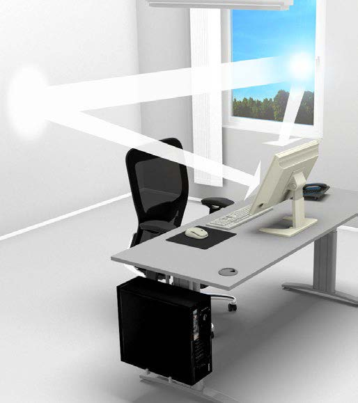
Abb. 17 Auf blendfreie Positionierung des Bildschirms achten
- Setzen Sie zur Vermeidung von psychischen Belastungen und Fehlbedienungen ergonomische Software ein.
- Berücksichtigen Sie die Alleinarbeit des oder der Beschäftigten bei Kontrollgängen und dem Aufenthalt in der Mischanlage und treffen Sie Maßnahmen, um eine wirksame Erste Hilfe gewährleisten zu können, z. B. durch den Einsatz von Personen-Notsignal-Anlagen.
- Sorgen Sie dafür, dass vom Steuerstand aus eine gute Übersichtlichkeit gewährleistet ist, z. B. Sicht zum Fahrmischer, Kameraüberwachung für Anlagenbereiche.
- Treffen Sie geeignete Maßnahmen zur Vermeidung von zu hohen Temperaturen in der Steuerkabine, rüsten Sie diese z. B. mit Klimaanlagen aus.
- Überprüfen Sie die Lärmbelastung in der Steuerkabine und veranlassen Sie technische Lärmschutzmaßnahmen, z. B. Lärmschutzfenster, wenn dies erforderlich ist.
- Weisen Sie an, dass bei Lärmeinwirkungen die Fenster und Türen des Steuerstandes geschlossen bleiben.
- Zur Vermeidung von elektrischer Gefährdung durch offene Schaltschränke können Sie diese z. B. klimatisieren.
- Vermeiden Sie Anstoßstellen. Sollte dies nicht möglich sein, kennzeichnen und polstern Sie die Anstoßstellen.
- Lassen Sie automatische Hochdruckreinigungsanlagen sicherheitstechnisch so gestalten, dass beim Öffnen und bei geöffneten Sichtöffnungen ein Anlaufen der Reinigungsanlage zwangsläufig ausgeschlossen ist.
|
3.2.2 Förderanlagen
Mit Förderanlagen werden Gesteinskörnung, Bindemittel, Betonzusatzstoffe und Betonzusatzmittel in Vorratssilos und -behälter und von dort in den Betonmischer transportiert. Anlagen zur Förderung sind:
- Förderbänder, Becherwerke, Kübelkrananlagen, Schrapper, Aufzugskübelbahnen, Vibrationsrinnen, fahrbare Wiegebehälter
- Pumpen und Rohrsysteme für Zugabewasser, flüssige Betonzusatzstoffe und Betonzusatzmittel
- Förderschnecken, Zellradschleusen und pneumatische Förderanlagen für Bindemittel und Zusatzstoffe
Während des Mischvorganges erfolgt der automatische Betrieb der Förderanlagen. Schutzeinrichtungen an Förderanlagen verhindern das Eingreifen in Gefahrstellen oder den Aufenthalt in Gefahrbereichen. Häufige Probleme entstehen durch Verunreinigungen, wenn zu deren Beseitigung in automatische Bereiche eingegriffen oder Schutzeinrichtungen entfernt und nicht wieder montiert werden.
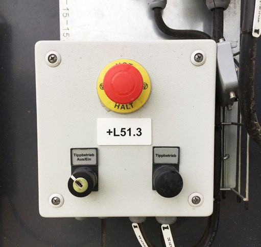
Abb. 18 Vor-Ort-Steuerung um Becher des Becherwerkes zu positionieren
|
Weitere Informationen
|
- DGUV Information 208-018 "Stetigförderer"
- DIN EN 618:2011-04 "Stetigförderer und Systeme – Sicherheits- und EMV-Anforderungen an mechanische Fördereinrichtungen für Schüttgut ausgenommen ortsfeste Gurtförderer"
- DIN EN 620:2011-07 "Stetigförderer und Systeme – Sicherheits- und EMV-Anforderungen an ortsfeste Gurtförderer für Schüttgut"
- DIN EN 60204-1:2006 "Sicherheit von Maschinen – Elektrische Ausrüstung von Maschinen Teil 1: Allgemeine Anforderungen"
- DIN EN ISO 13857:2008 "Sicherheit von Maschinen – Sicherheitsabstände gegen das Erreichen von Gefährdungsbereichen mit den oberen und unteren Gliedmaßen"
- Merkblattreihe T008 "Maschinen Sicherheitskonzepte und Schutzeinrichtungen" der Berufsgenossenschaft Rohstoffe und chemische Industrie
|
|
Gefährdungen
|
- Eingezogen oder gequetscht werden an den beweglichen Teilen der Förderanlagen.
- Getroffen werden durch herunterfallendes Fördergut aus Förderanlagen.
- Stolpern und Stürzen durch ausgetretenes Fördergut aus den Förderanlagen.
- Verletzt werden durch mit Druck aus pneumatischen Förderanlagen und Rohrleitungen austretende Bindemittel und Betonzusatzstoffe.
- Anstoßen an festen Bauteilen.
- Verletzt werden bei der Beseitigung von Störungen im Winterbetrieb, z. B. festgefrorene und durchrutschende Förderbänder.
- Abstürzen, gequetscht werden, getroffen werden bei der Beseitigung von Verstopfungen durch z. B. verklumptes Material an Schiebern, Klappen und auf Rosten.
- Brandgefahr beim Betrieb von Heizlüftern und beim Abtauen von Frostverstopfungen mit Gasbrennern.
- Ausrutschen und Stürzen bei Arbeiten in feuchter Arbeitsumgebung.
- Einwirkung auf Augen, Haut, Atemwege oder Lunge
- durch aus Förderanlagen ausgetretene Stoffe.
- durch Austreten von Bindemitteln bei nicht ordnungsgemäß angeschlossenen Fördereinrichtungen, bei Reinigung von Rohrleitungen oder der Filteranlage sowie bei der Probeentnahme.
- Einwirkung von Lärm und Staub, z. B. beim Betrieb von Elevatoren, pneumatischen Einrichtungen, z. B. an Schiebern und Klappen.
Diese Gefährdungen können Sie mit folgenden Maßnahmen reduzieren:
|
|
Maßnahmen für den Betrieb
|
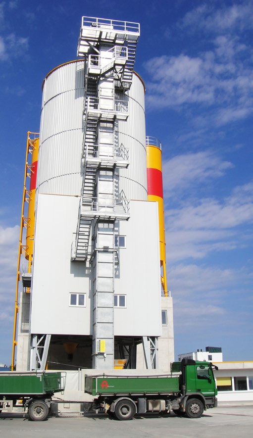
Abb. 19 Turmanlage mit Becherwerk
- Sorgen Sie dafür, dass alle beweglichen Teile der Förderanlagen so konstruiert und gebaut sind, dass Gefährdungen durch Berührungen dieser Teile oder Aufenthalte in Gefahrenbereichen verhindert sind.
- Rüsten Sie parallel zu betreibende Förderstränge mit jeweils einem Hauptschalter aus.
- Achten Sie darauf, dass Ihre Anlagen mit trennenden oder nicht trennenden Schutzeinrichtungen (z. B. Schutzzaun, Schutzgitter, Sicherheitsschalter) ausgerüstet sind.
- Überprüfen Sie, ob alle gefahrbringenden Bewegungen von Not-Halt-Einrichtungen unterbrochen werden können, z. B. Förderbänder, Schrägaufzüge.
- Verhindern Sie den ungewollten Austritt von Material aus Förderanlagen.
- Setzen Sie zur Reduzierung von Verschmutzungen des Gurtes an Förderbändern Gurtreinigungseinrichtungen, wie Abstreifer oder Bürsten ein.
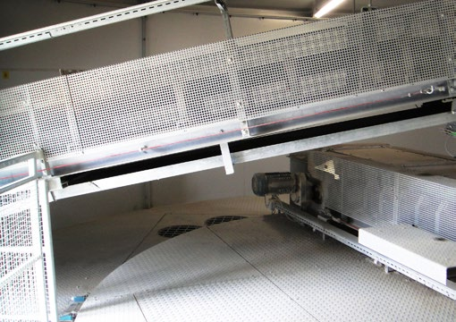
Abb. 20 Gurtbandförderer mit erforderlichen Schutz- und Sicherheitseinrichtungen
- Stellen Sie regelmäßig die Abstreifer an Förderbändern nach bzw. erneuern Sie diese bei Fehlfunktion.
- Achten Sie darauf, dass Ihre Bandanlagen mit Anlaufwarneinrichtungen ausgestattet sind, soweit sie nicht vom Steuerstand aus einsehbar sind.
- An den Schrapperanlagen sind zu den bisher üblichen Schutzmaßnahmen, wie akustische und optische Warneinrichtungen in Kombination mit Beschilderungen und Not-Halt-Einrichtungen, zusätzliche Schutzmaßnahmen erforderlich. Legen Sie in Ihrer Gefährdungsbeurteilung fest, welche zusätzlichen technischen Schutzmaßnahmen in Ihren Anlagen getroffen werden müssen, z. B. Bereichssicherung mittels Lichtschranken, verriegelte Tore und gewährleisten Sie damit, dass keine Personen bei Betrieb des Schrappers zu Schaden kommen.
- Vermeiden Sie im Winterbetrieb Wasseransammlungen in den Förderanlagen.
- Prüfen Sie, ob bei frostgefährdeten Materialboxen ein Leeren der Boxen über Nacht nötig oder möglich ist, um Stopfer zu vermeiden.
- Setzen Sie geeignete Geräte zur Vermeidung von Einfrierungen ein, z. B. Heizlüfter, Heizschlangen, Dampfleitungen.
- Entscheiden Sie, ob bei starkem Frost die Anlage ohne zusätzliche Gefährdungen betrieben werden kann oder eine winterbedingte Abschaltung notwendig ist.
- Achten Sie bei der Beseitigung von Verstopfungen an Schiebern, Klappen und auf Rosten auf einen sicheren Standplatz.
- Lassen Sie die Klappen und Schieber bei der Beseitigung von Störungen formschlüssig gegen selbständiges Schließen sichern.
- Entfernen Sie bei der Benutzung von Heizlüftern und Gasbrennern brennbare Materialen aus dem Gefahrenbereich.
- Verwenden Sie bei unvermeidbaren Nassreinigungsarbeiten im Winterbetrieb warmes Wasser und sorgen Sie für Trittsicherheit durch Einsatz von Streumitteln.
- Erstellen Sie Betriebsanweisungen auf der Grundlage Ihrer betrieblichen Gefährdungsbeurteilung und der Bedienungsanleitung des Herstellers.
Berücksichtigen Sie insbesondere die Fälle
- Betriebsstörungen
- Wartung und Reinigung
- Instandsetzung
- Inspektion
Ihre spezifischen Betriebsanweisungen müssen z. B. folgende Inhalte enthalten:
- "Steuerung außer Betrieb nehmen und gegen Wiedereinschalten sichern",
-
"Allpolig vom Netz trennen",
-
"Restenergien berücksichtigen".
|
|
Maßnahmen bei Kontrollarbeiten
|
- Sorgen Sie dafür, dass die vorgesehenen Verkehrswege sicher sind und benutzt werden.
- Veranlassen Sie, dass die Verkehrswege von Schnee geräumt und bei Glätte gestreut werden.
- Sorgen Sie für Ordnung und Sauberkeit in der gesamten Anlage.
- Gewährleisten Sie, dass Öffnungen an Becherwerken mit Schutzeinrichtungen verschlossen sind und sich nur mit Werkzeugen öffnen lassen.
- Sofern Schutzeinrichtungen ohne ihre Befestigungsmittel in geschlossener Stellung verbleiben, müssen sie elektrisch verriegelt werden.
- Bei häufig für Kontrollzwecke zu öffnenden Schutzeinrichtungen, kann alternativ hinter der Gehäusetür ein weiteres Schutzgitter fest installiert werden.
- Müssen an Becherwerken für Kontrollarbeiten Schutzeinrichtungen geöffnet werden, so ist das Becherwerk an der zu öffnenden Kontrollöffnung mit einem Eingriffschutz zu versehen oder sie ist elektrisch zu verriegeln.
- Setzen Sie für die sichere Positionierung der Becher des Becherwerks z. B. eine Vor-Ort-Steuerung im Tippbetrieb ein bzw. sorgen Sie für eine eindeutige Kommunikation zwischen der Person am Kontrollort und der Person am Bedienstand.
- Stellen Sie Ihren Beschäftigten persönliche Schutzausrüstungen wie Sicherheitsschuhe, Schutzhelm, Schutzbrille, Staubschutzmasken, geeignete Schutzhandschuhe und ggf. Gehörschutz zur Verfügung und sorgen Sie dafür, dass diese getragen wird.
|
3.2.3 Reinigen des Betonmischers
Betonmischer müssen in regelmäßigen Zeitabständen von anhaftenden Betonresten gereinigt werden. Die damit verbundenen manuellen Reinigungsarbeiten müssen durch das Anlagenpersonal bei geöffnetem Betonmischer durchgeführt werden. Insbesondere bei Mischanlagen in der Betonsteinindustrie muss dazu regelmäßig über den offenen Mischerdeckel nachgereinigt oder in den Mischer eingestiegen werden.
Immer wieder ereignen sich bei Reinigungstätigkeiten schwere und tödliche Unfälle durch den ungeplanten Anlauf der Anlagen infolge funktionsuntüchtiger Schutzeinrichtungen bzw. wegen fehlender Abschaltung des Betonmischers über den Hauptschalter.
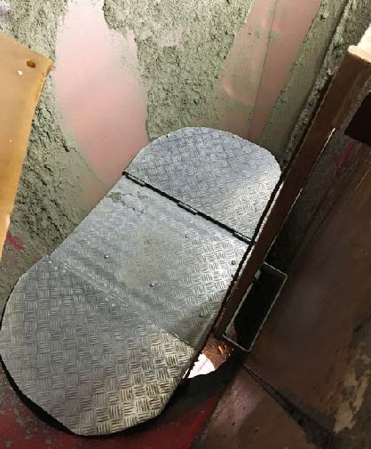
|
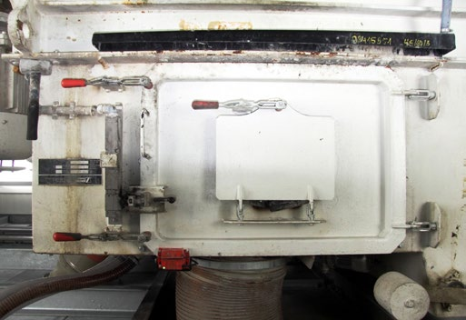
|
Abb. 21 Arbeitsbühne im Austragstrichter |
Abb. 22 Betonmischeröffnung mit elektr. Verriegelung und verschlossener Sichtklappe und dahinterliegendem Schutzgitter |
|
Weitere Informationen
|
- DGUV Information 203-079 "Auswahl und Anbringung von Verriegelungseinrichtungen"
- DGUV Information 203-087 "Auswahl und Anbringung von Schlüsseltransfersystemen"
- BG RCI-Praxishandbuch "Arbeitssicherheit und Gesundheitsschutz in der Baustoffindustrie"
|
|
Gefährdungen
|
- Verletzt werden durch Anlaufen bzw. Nachlaufen des Rührwerkes und durch Bewegung des Austragsschiebers.
- Absturz beim Ein- und Aussteigen aus dem Betonmischer und in den Austragstrichter unterhalb des Betonmischers.
- Anstoßen mit Körperteilen an Maschinenteilen.
- Getroffen werden von herabfallenden Betonmischerdeckeln oder Werkzeugen.
- Hautreizungen durch feuchten Beton.
- Verätzungen beim Umgang mit Zement- bzw. Betonlösern auf Säurebasis.
- Reizungen von Haut und Augen durch Spritzwasser beim Reinigen mit Hochdruckreiniger.
- Hautschädigung durch die Einwirkung von Feuchtigkeit und hautschädigenden Stoffen, z. B. Betontrennmitteln.
- Verletzungen durch Hochdruckwasserstrahl bei automatisierten und manuellen Reinigungsanlagen.
- Elektrische Gefährdung bei Arbeiten mit ungeeigneten elektrischen Betriebsmitteln im Betonmischer als engem Raum.
- Lärm durch den Einsatz von Hochdruckreinigern und verwendeten Handwerkzeugen, wie z. B. Druckluft- oder Elektrohämmern.
- Vibration durch den Gebrauch von Druckluft- bzw. Elektrohämmern.
- Augenverletzungen durch sich lösende Betonbrocken bei Arbeiten mit Druckluft- bzw. Elektrohämmern oder Hammer und Meißel und Hochdruckreinigern.
- Ungünstige Körperhaltung bzw. Zwangshaltung beim Aufenthalt im Betonmischer.
- Staub, z. B. beim mechanischen Lösen erhärteten Betons, abgelagerter Zementstaub.
Diese Gefährdungen können Sie mit folgenden Maßnahmen reduzieren:
|
|
Maßnahmen
|
- Zur Reduzierung der manuellen Reinigungsarbeiten sollten moderne Betonmischer mit integrierten automatischen Hochdruckreinigungsanlagen ausgerüstet werden.
- Lassen Sie automatische Hochdruckreinigungsanlagen sicherheitstechnisch so gestalten, dass beim Öffnen und bei geöffneten Betonmischerdeckeln und Sichtöffnungen ein Anlaufen der Reinigungsanlage zwangsläufig ausgeschlossen ist.
- Wenn bei den Reinigungsarbeiten das Einsteigen in den Betonmischer notwendig ist, sorgen Sie dafür, dass der Betonmischerantrieb über den Hauptschalter abgeschaltet und gegen Wiedereinschalten gesichert wird.
- Muss zum Reinigen in den Betonmischer eingestiegen werden, beachten Sie die Maßnahmen bei "Arbeiten in engen Räumen" und schließen Sie ggf. Alleinarbeit aus.
- Gewährleisten Sie, dass der Betonmischerdeckel erst dann geöffnet werden kann, wenn die Mischerwerkzeuge zum Stillstand gekommen sind, z. B. mit Zuhalteschaltungen.
- Wenn die Mischerwerkzeuge beim Reinigen maschinell gedreht werden, müssen Sie darauf achten, dass dies bei geöffnetem Mischer nur mit einer Tippsteuerung möglich ist. Hierbei sind folgende Regelungen zu beachten:
- Die Tippsteuerung darf nicht vom Zwangsmischer aus bedient werden können.
- Bei der Betätigung des Tippbetriebes dürfen sich die Mischwerkzeuge nur jeweils um weniger als 10° im Einhandbetrieb und um weniger als 20° bei der Zweihandsteuerung bewegen.
- Alternativ können die Mischwerkzeuge, z. B. über einen Frequenzumformer mit einer Zweihandsteuerung und reduzierter Geschwindigkeit, kontinuierlich gedreht werden. Nach dem Loslassen der Zweihandsteuerung ist ein Nachlauf der Mischwerkzeuge so gering wie möglich zu halten, um eine Gefährdung zu vermeiden.
- Die Vor-Ort-Steuerung wird durch einen Schlüsselschalter betriebsbereit geschaltet, der gleichzeitig die Steuerung vom Steuerstand außer Kraft setzt.
- Führen Sie regelmäßige sicherheitstechnische Überprüfungen der Schutzeinrichtungen durch.
- Verwenden Sie Ein- bzw. Ausstiegshilfen im Bereich der Betonmischer, wie z. B. Tritte oder Treppen.
- Gewährleisten Sie einen sicheren Standplatz bei Arbeiten im Bereich des Auslauftrichters. Dies können z. B. geeignete speziell angepasste Konstruktionen sein, welche die Öffnung verschließen.
- Sorgen Sie für sichere Anschlagpunkte und eine sichere Befestigung der aufgeklappten Betonmischerdeckel. Lassen Sie die Vorrichtungen (z. B. Winden) regelmäßig prüfen.
- Achten Sie darauf, dass Werkzeuge sicher abgelegt werden, um ein unbeabsichtigtes Hineinstürzen in den Betonmischer zu vermeiden.
- Stellen Sie Ihren Beschäftigten persönliche Schutzausrüstungen wie Sicherheitsschuhe, Schutzhelm, Schutzbrille, geeignete Schutzhandschuhe (zum Beispiel nitrilgetränkte Baumwollhandschuhe), Gesichtsschutzschild, wasserabweisende Schutzschürze und ggf. Gehörschutz zur Verfügung und sorgen Sie dafür, dass diese getragen wird.
- Setzen Sie durch, dass bei Arbeiten in engen Räumen nur geeignete elektrotechnische Betriebsmittel (z. B. Trenntrafo, Schutzkleinspannung) oder Druckluftwerkzeuge verwendet werden.
- Sorgen Sie für die Verwendung schwingungsgeminderter Werkzeuge bzw. begrenzen Sie erforderlichenfalls die Arbeitszeit mit derartigen Werkzeugen.
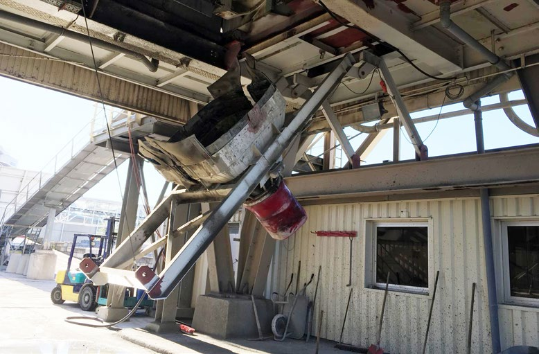
Abb. 23 Abkippbarer Beladungstrichter
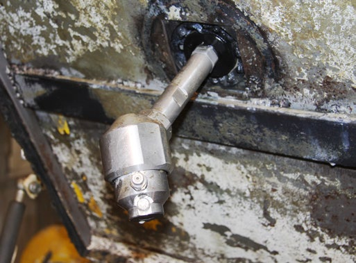
Abb. 24 Hochdruckreinigungsdüse in Betonmischer
|
3.2.4 Reinigungsarbeiten im Werk
Reinigungsarbeiten im Werk sind entweder regelmäßig und in Folge von Störungen oder undichten Förderanlagen sowie im Bereich der Förderanlagen und deren Übergabestellen erforderlich. Bei der Beseitigung der ausgetretenen Stoffe treten häufig Absturz-, Quetsch- und Schergefährdungen und Belastungen durch schwere körperliche Arbeiten und Staub auf.
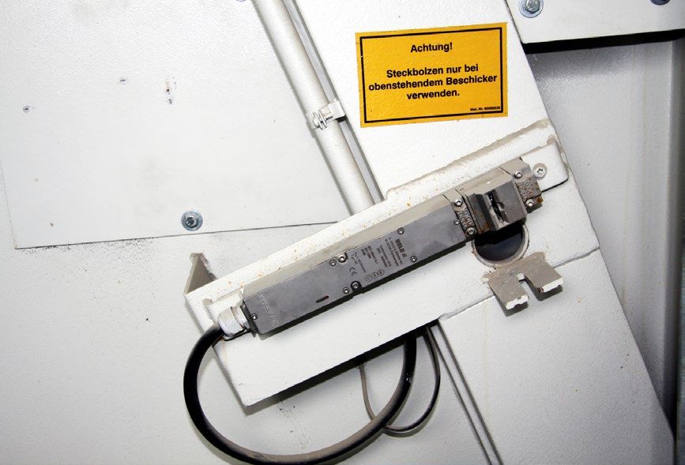
Abb. 25 Stellungsüberwachung für den Steckbolzen der Kübelaufzugsbahn
|
Weitere Informationen
|
- DGUV Information 208-018 "Stetigförderer"
- DIN EN 620:2011-07 "Stetigförderer und Systeme – Sicherheits- und EMV-Anforderungen an ortsfeste Gurtförderer für Schüttgut"
- Unfallbrennpunkte "Silobefüllung"
- Sicherheitsdatenblätter für Beton
- Leitmerkmalmethode der BAuA zur Beurteilung von Heben, Halten, Tragen
|
|
Gefährdungen
|
- Mechanische Gefährdung durch:
- anlaufende Maschinen und Anlagenteile, z. B. Kübelaufzug, Förderband und Schieber
- Restenergien, z. B. angehobene Maschinenteile, Druckluft- und Hydraulikantriebe
- herabfallende Verunreinigungen.
-
Absturz- und Ausrutschgefahr bei Reinigungsarbeiten an hochgelegenen Stellen.
- Heben und Tragen von schweren Lasten.
- Arbeiten in Zwangshaltungen unter beengten Verhältnissen.
- Gesundheitsgefährdung durch Staubentwicklung, z. B. durch Stemmarbeiten.
- Gesundheitsgefährdung durch Lärm und Hand-Arm-Vibration bei Verwendung von Drucklufthammer sowie Flüssigkeitsstrahler.
- Gefährdung durch wegspringende Teile bei Stemm- und Druckstrahlarbeiten.
- Chemische Gefährdung, z. B. durch Betonlöser (Säuren), Trennmittel oder ausgelaufene Betonzusatzmittel.
- Biologische Gefährdung durch Taubenkot, Mäusekot.
- Stolpern und Stürzen, besonders bei Glätte.
- Anstoß- und Stoßgefährdung.
- Gesundheitsgefährdung bei Arbeiten im Freien und in unbeheizten Anlagenteilen in der kalten Jahreszeit.
- Gefährdung durch unzureichende Einweisung, Unterweisung der Beschäftigten von Fremdfirmen (Spediteure).
Diese Gefährdungen können Sie mit folgenden Maßnahmen reduzieren:
|
|
Maßnahmen
|
- Sorgen Sie dafür, dass Ihre Anlagen so konstruiert, gewartet und instandgehalten werden, dass Reinigungsarbeiten minimiert werden.
- Berücksichtigen Sie bereits bei der Errichtung der Mischanlage sonstige Reinigungsarbeiten mit ausreichenden Platzverhältnissen und anderweitige, die Reinigung erleichternde Maßnahmen (z. B. Hebezeug für Sammelbehälter).
- Achten Sie auf Funktionstüchtigkeit der Abdichtung geschlossener Anlagenteile, z. B. dichte Mischerdeckel und Schieber sowie funktionstüchtige Abstreifer zur Vermeidung von Verunreinigungen.
- Treffen Sie Maßnahmen gegen Absturz an hoch gelegenen Reinigungsstellen, z. B. Hubarbeitsbühnen oder Gerüst.
- Sofern Sie persönliche Schutzausrüstungen gegen Absturz einsetzen müssen, beachten Sie alle erforderlichen organisatorischen Maßnahmen für einen sicheren Einsatz, wie z. B. sichere Anschlagpunkte, Auswahl gesundheitlich geeigneter Personen, Organisation der Rettung im Notfall, regelmäßige Unterweisung der Mitarbeitenden, Prüfung der persönlichen Schutzausrüstungen gegen Absturz.
- Vermeiden Sie Stolperstellen und sorgen Sie für leicht zu reinigende Untergründe.
- Vermeiden Sie das regelmäßige Heben und Tragen von schweren Lasten.
- Stellen Sie geeignete Werkzeuge zur Verfügung, um Arbeiten in Zwangshaltung und körperlich schwere Arbeiten zu verringern.
- Sorgen Sie durch technische bzw. organisatorische Maßnahmen dafür, dass die Belastungen bei Arbeiten in Zwangshaltungen vermieden oder minimiert werden.
- Bei Reinigungsarbeiten achten Sie auf folgende Regelungen:
- Lassen Sie die Arbeiten an Anlagen grundsätzlich nur mit montierten Schutzeinrichtungen durchführen.
- Ist dies nicht möglich, dann müssen die Arbeiten an abgeschalteten und gegen Wiedereinschalten gesicherten Anlagen ausgeführt werden
- Schließen Sie die Gefährdungen durch Restenergien aus
- Sichern Sie auch vor- und nachgeschaltete Anlagenteile, z. B.
- Kübelaufzug – Mischer
- Übergabe Becherwerk zum Verteilerband auf die gleiche Weise
- Treffen Sie klare Absprachen, z. B. zum Umfang, Zeitraum und Örtlichkeit der Reinigung.
- Wenn Sie Fremdfirmen einsetzen, sorgen Sie dafür, dass diese die betrieblichen Arbeitsschutzregeln Ihres Unternehmens kennen und beachten. Lassen Sie sich dies schriftlich bestätigen.
- Sorgen Sie dafür, dass die Arbeiten koordiniert werden.
- Sichern Sie bei Reinigungsarbeiten im Befüllbereich des Aufzugkübels diesen z. B. mit mindestens zwei Steckbolzen.
- Sorgen Sie bei Reinigungsarbeiten auf dem Betonmischer, z. B. in der Kübelaufzugsbahn, für Maßnahmen gegen Absturz, z. B. Klappgeländer, Bühnen.
- Stellen Sie geeignete Sammelbehälter zur Verfügung, die mittels Hebezeuge z. B. aus dem Reinigungsbereich gehoben werden können.
- Beseitigen Sie Stäube mittels Staubsauger oder Abspülen mit Wasser.
- Setzen Sie lärm- und schwingungsgeminderte Druckluftwerkzeuge ein.
- Beachten Sie die aktuellen Sicherheitsdatenblätter, technischen Merkblätter und erstellen Sie für die Arbeitsplätze und den Umgang mit Gefahrstoffen Betriebsanweisungen.
- Stellen Sie Ihren Beschäftigten persönliche Schutzausrüstungen, wie Sicherheitsschuhe, Schutzhelm, Schutzbrille, geeignete Schutzhandschuhe (zum Beispiel nitrilgetränkte Baumwollhandschuhe), Wetterschutz- und Thermokleidung, ggf. Gehörschutz zur Verfügung und sorgen Sie dafür, dass diese getragen wird.
- Halten Sie an den Anlagen saugfähige Materialien zum Aufnehmen ausgelaufener Flüssigkeiten bereit.
- Lassen Sie z. B. Tauben- und Mäusekot nur durch Fachfirmen beseitigen.
- Vermeiden Sie Anstoßstellen. Sollte dies nicht möglich sein, kennzeichnen und polstern Sie die Anstoßstellen.
-
Erstellen Sie Betriebsanweisungen auf der Grundlage Ihrer betrieblichen Gefährdungsbeurteilung und der Bedienungsanleitung des Herstellers.
Berücksichtigen Sie insbesondere die Fälle
- Betriebsstörungen
- Wartung und Reinigung
- Instandsetzung
- Inspektion.
Ihre spezifischen Betriebsanweisungen müssen z. B. folgende Inhalte enthalten:
- "Steuerung außer Betrieb nehmen und gegen Wiedereinschalten sichern"
- "Allpolig vom Netz trennen"
- "Restenergien berücksichtigen".
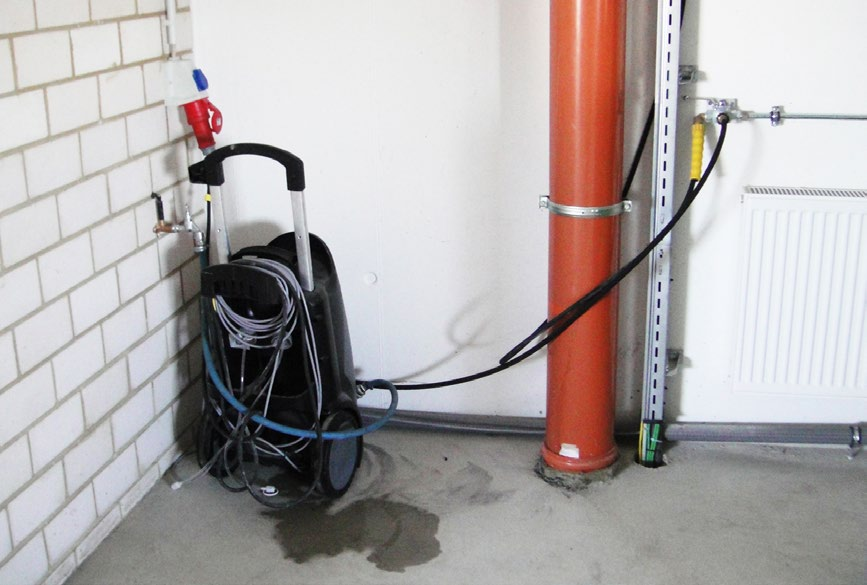
Abb. 26 Zentral untergebrachter Hochdruckreiniger für Reinigungsarbeiten mit Verteilleitung
|
3.2.5 Recyclinganlage und Prozesswasser
An den Betonmischanlagen wird Restbeton wiederaufbereitet. Dies erfolgt durch Auswaschen des Restbetons. Das Wasser wird in geeigneten Becken und Behältnissen gesammelt. In den Wasserbecken wird durch den Einsatz von Rührwerken verhindert, dass sich Schwebstoffe absetzen. Das an den Recyclinganlagen anfallende Wasser wird als Prozesswasser wiederverwendet.
Die Absetz- und Recyclingbecken müssen in regelmäßigen Abständen geleert und gereinigt werden. Wesentliche Gefährdungen sind automatisch anlaufende Anlagenteile und nicht gesicherte freie Wasserflächen. Daraus können sich besondere Gefährdungen ergeben.
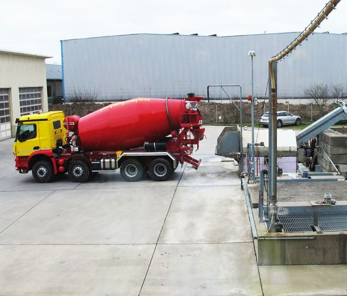
|
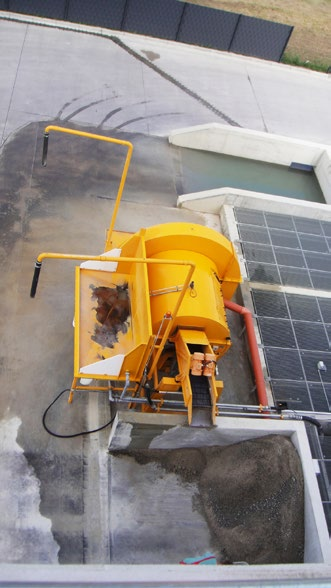
|
Abb. 27 Fahrmischer mit Restbeton vor Recyclinganlage |
Abb. 28 Recyclinganlage mit abgedecktem Becken |
|
Gefährdungen
|
- Absturz, Ertrinken und Versinken in Rührwerks-, Betonabsetz- und Schrägbecken.
- Stolpern, Rutschen und Stürzen auf Verkehrswegen.
- Einzugsgefahr an den Förderschnecken, Auswaschtrommeln der Recyclinganlage, z. B. am Materialein- und -auslauf sowie an Austragsbändern.
- Verletzt werden durch automatisch anlaufende Anlagenteile, wie z. B. Rührwerke.
- Quetsch- und Schergefährdung bei Betrieb und Reinigung des Entleerkastens für Betonpumpen.
- Rutschgefahr durch Wasser im Bereich der Recyclinganlage.
- Gefahr durch Glatteisbildung.
- Reizungen von Haut, Atemwegen und Schleimhäuten und Gefahr ernster Augenschäden durch Wasser mit erhöhtem pH-Wert, z. B. beim Reinigen der Anlage oder durch nicht ordnungsgemäß angeschlossene Pumpen und Fördereinrichtungen.
- Verletzungen durch Bersten bzw. Platzen von Fördereinrichtungen bei zu hohem Arbeitsdruck und/oder nicht funktionierenden Sicherheitseinrichtungen.
- Absturz und Einsinken von Fahrzeugen in Wasserbecken.
- Gefährdung durch unzureichende Einweisung und Unterweisung der Beschäftigten von Fremdfirmen (Spediteure) über den Betrieb der Recyclinganlage.
- Lärm, z. B. durch laufende Betonpumpen, Fahrmischer, beim Entleeren an der Recyclinganlage.
Diese Gefährdungen können Sie mit folgenden Maßnahmen reduzieren:
|
|
Maßnahmen
|
- Installieren Sie an den Becken Geländer. Kontrollieren Sie diese regelmäßig.
- Sichern Sie die Bereiche der Schrägbecken gegen Zutritt von Personen und kennzeichnen Sie den Gefahrenbereich.
- Prüfen Sie die Abdeckungen regelmäßig auf deren Zustand, z. B. Vollständigkeit, Festigkeit und befestigen Sie Gitterroste formschlüssig gegen unbeabsichtigtes Ausheben und Verrutschen. Achten Sie auf die Einbau- und Verwendungsvorschrift des Herstellers.
- Statten Sie Ihre Beschäftigten mit Rettungswesten aus, wenn die Gefahr besteht, dass sie bei Arbeiten in ein Wasserbecken fallen können.
- Prüfen Sie an Hand der Gefährdungsbeurteilung, ob Alleinarbeit im Bereich der Recycling-/Absetzbecken erlaubt ist, legen Sie ggf. die Bedingungen fest.
- Ergreifen Sie geeignete Maßnahmen, um es Personen zu ermöglichen, im Notfall das Becken zu verlassen, z. B. Steigeisen.
- Sorgen Sie für rutschhemmende und trittsichere Verkehrswege, die von Personen genutzt werden.
- Beseitigen Sie Stolperstellen und decken Sie Vertiefungen ab.
- Achten Sie darauf, dass die Einzugsstellen im Bereich von Öffnungen der Schnecken, z. B. durch Gitterstäbe in der Auslauföffnung oder verlängertem Auslaufrohr gesichert sind, rüsten Sie ggf. Sicherheitseinrichtungen nach.
- Gewährleisten Sie, dass Revisionsöffnungen der Förderschnecken mit Schutzeinrichtungen verschlossen sind und sich nur mit Werkzeugen öffnen lassen.
- Sofern Schutzeinrichtungen ohne ihre Befestigungsmittel in geschlossener Stellung verbleiben, müssen sie elektrisch verriegelt werden.
- Achten Sie auf das Vorhandensein von Anlaufwarnungen, wenn eine direkte oder indirekte Einsehbarkeit möglicher Gefahrbereiche vom Bedienstand aus nicht möglich ist.
- Sichern Sie Einzugsstellen an Förderbändern mit Schutzeinrichtungen.
- Stellen Sie sicher, dass bei Betrieb und Reinigung des Entleerkastens an Betonpumpen die Sicherheitseinrichtungen wirksam sind.
- Vermeiden Sie Wasseransammlungen durch geneigte Hofflächen und Wasserabläufe.
- Vermeiden Sie Sturzgefahr auf Glatteisflächen, z. B. mit abstumpfenden Mitteln.
- Stellen Sie Ihren Beschäftigten persönliche Schutzausrüstungen wie Sicherheitsschuhe, Schutzhelm, geschlossene Schutzbrille, geeignete Schutzhandschuhe (zum Beispiel nitrilgetränkte Baumwollhandschuhe) und ggf. Gehörschutz zur Verfügung und sorgen Sie dafür, dass diese getragen wird.
- Stellen Sie ausreichend Augenspülflüssigkeit zur Verfügung. Diese sollte zu den Betriebszeiten zugänglich sein und frostsicher gelagert sein.
- Wenn Sie Fremdfirmen einsetzen, sorgen Sie dafür, dass diese die betrieblichen Arbeitsschutzregeln Ihres Unternehmens kennen und beachten. Lassen Sie sich dies schriftlich bestätigen.
- Sorgen Sie dafür, dass die Arbeiten koordiniert werden.
- Sorgen Sie für eine dauerhafte und eindeutige Beschriftung der Bedienelemente.
|
3.2.6 Radlader, Gabelstapler, Hubarbeitsbühne, Gerüste und weitere Arbeitsmittel
Für den innerbetrieblichen Transport sowie bei Reparatur- und Instandhaltungsmaßnahmen kommen eine Reihe von Hilfsgeräten zum Einsatz. Insbesondere durch den seltenen Gebrauch dieser Hilfsgeräte können die damit verbundenen Gefahren zu Fehleinschätzungen führen. Fehlende und unklare Absprachen aller Beteiligten beinhalten ebenfalls ein hohes Gefahrenpotential.
Fehlende Qualifikationen, Einweisungen und Unterweisungen bei der Benutzung des Arbeitsmittels sowie Nichtbeachten der Bedienungsanleitungen und Aufbauanleitungen bedeuten besondere Gefährdungen.
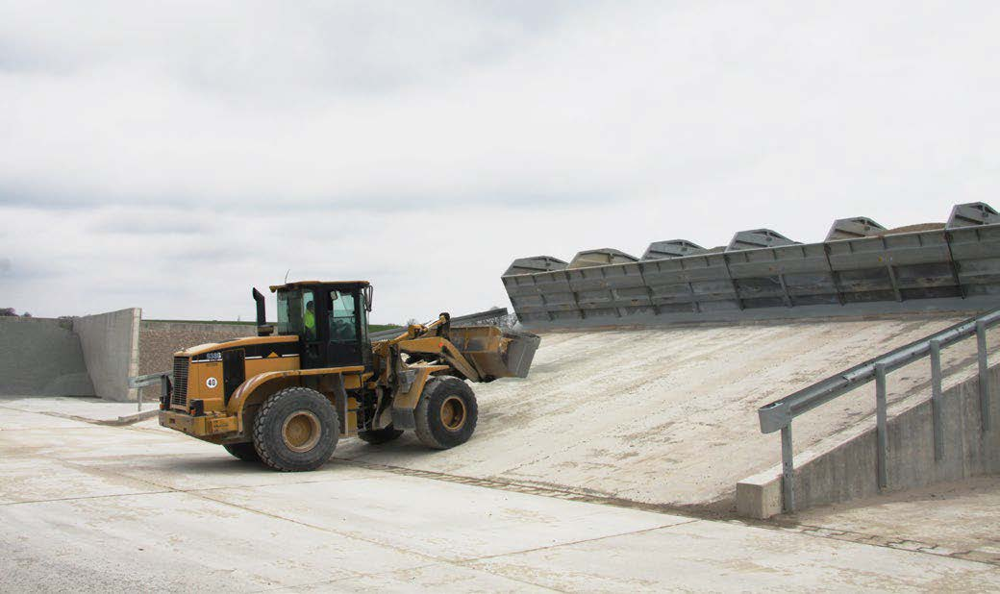
Abb. 29 Radlader beim Befüllen der Materialboxen
|
Gefährdungen
|
- Abstürzen beim Auf- und Absteigen sowie bei Arbeiten auf den Hilfsgeräten.
- Anschlagen und Anstoßen in der Fahrerkabine beim Anfahren an feste Gegenstände.
- Umkippen mit den Hilfsgeräten.
- Rutschgefahr beim Einsatz von Hilfsgeräten, z. B. Radlader, Gabelstapler bei Glätte.
- Herausstürzen von Personen aus den Fahrerkabinen und Arbeitseinrichtungen, z. B. dem Arbeitskorb einer Hubarbeitsbühne.
- Quetschen, Scheren, etc. durch nicht arretierte auswechselbare Ausrüstungen, z. B. Arbeitsbühnen an Gabelstaplern.
- Quetschen beim Verfahren der Hubarbeitsbühne.
- Elektrische Gefährdung, z. B. durch elektrische Freileitungen.
- Gefährdungen durch Anfahren der Hilfsgeräte durch z. B. Fahrzeuge.
- Vibrations- und Lärmbelastung beim Fahren von Radladern und Gabelstaplern.
- Angefahren oder Überfahren werden etc. von Personen durch fahrende Hilfsgeräte.
- Getroffen werden von herabfallenden Gegenständen von Hilfsgeräten und angehobenen Lasten.
- Brand- und Explosionsgefahr bei unsachgemäßer Starthilfe von Verbrennungsmotoren an Hilfsgeräten.
- An- und Überfahren von Personen und Hindernissen.
- Rutschgefahr durch Glätte und Schnee auf Gerüsten und Aufstiegen auf Hilfsgeräten.
Diese Gefährdungen können Sie mit folgenden Maßnahmen reduzieren:
|
|
Maßnahmen
|
- Sorgen Sie dafür, dass die Hilfsgeräte in einem sicheren Zustand sind und entsprechend den Bedienungsanleitungen der Hersteller bzw. der Aufbau- und Verwendungsanleitungen des Herstellers, z. B. bei Gerüsten eingesetzt werden.
- Auswechselbare Ausrüstungen müssen entsprechend der Bedienungsanleitung des Herstellers verwendet werden. Prüfen Sie die Arretierung bei der Verwendung von Anbaugeräten mit Schnellwechseleinrichtungen.
- Sichern Sie absturzgefährdete Bereiche, z. B. Rampen, gegen seitliches Überfahren der Absturzkanten.
- Achten Sie darauf, dass Hilfsgeräte sicher aufgestellt und nicht überlastet werden, z. B. Hubarbeitsbühnen.
- Verhindern Sie die Durchführung von Arbeiten aus Arbeitseinrichtungen, die nicht dafür vorgesehen sind, z. B. der Radladerschaufel.
- Setzen Sie für eine Verbesserung der Sichtverhältnisse insbesondere beim Rückwärtsfahren technische Hilfsmittel ein, z. B. Kamerasysteme.
- Kennzeichnen Sie Bereiche mit verminderter Durchfahrtshöhe.
- Schließen Sie aus, dass Personen beim Heraustreten aus Türen/Toren von vorbeifahrenden Arbeitsmitteln erfasst werden können, z. B. durch Anordnung von Geländern parallel zur Fahrbahn.
- Achten Sie darauf, dass die eingesetzten Hilfsgeräte gegen unbeabsichtigtes Wegrollen z. B. durch Betätigung der Feststellbremse, gesichert sind.
- Setzen Sie für die Bedienung von Gabelstaplern, Radladern und Hubarbeitsbühnen nur Personen ein, die
- mindestens 18 Jahre alt und zuverlässig sind
- körperlich und geistig geeignet sind
- ausgebildet und unterwiesen wurden
- Sie schriftlich beauftragt haben.
- Sorgen Sie dafür das Arbeitsmittel nicht von unbefugten Personen benutzt werden, z. B. durch Abziehen des Schlüssels oder Sperren des Gerüstes.
- Benutzen Sie beim Auf- und Abstieg die dafür vorgesehenen Haltegriffe und Tritte/Stufen. Achten Sie darauf, dass Ihre Beschäftigten Haltegriffe benutzen.
- Achten Sie auf das Vorhandensein und die Benutzung der Fahrerrückhalteeinrichtungen, z. B. Gurte.
- Weisen Sie Ihre Beschäftigten an, dass Türen und Fenster der Fahrerkabinen stets geschlossen zu halten sind, um Lärm- und Staubbelastung zu vermeiden.
- Zur Verringerung der Vibrationsbelastung setzen Sie Geräte mit funktionsfähigen, schwingungsgedämpften, auf das Körpergewicht einstellbaren Sitzen ein und sorgen Sie für ebene, schlaglochfreie Verkehrswege.
- Regeln Sie den Einsatz der Arbeitsmittel unter Ihren konkreten betrieblichen Einsatzbedingungen und erstellen Sie dazu Betriebsanweisungen.
- Lassen Sie regelmäßige Prüfungen Ihrer eingesetzten Hilfsgeräte durch eine zur Prüfung befähigte Person sowie eine tägliche Sichtprüfung durch den Fahrer oder die Fahrerin durchführen.
- Beauftragen Sie Fachfirmen mit der Durchführung erforderlicher Instandhaltungsarbeiten.
- Weisen Sie an, dass mechanische Sicherungen bei Reparaturen an Hydraulikeinrichtungen der Hilfsgeräte einzulegen sind.
- Halten Sie die erforderlichen Sicherheitsabstände zu Freileitungen bzw. elektrischen Einrichtungen ein.
- Achten Sie darauf, dass es beim Einsatz von Hubarbeitsbühnen entsprechend der Gefährdungsbeurteilung und/oder der Betriebsanleitung des Herstellers notwendig sein kann, im Arbeitskorb eine PSA gegen Absturz zu benutzen.
- Gewährleisten Sie, dass sich keine Personen unter angehobenen Lasten aufhalten.
- Sichern Sie Gefahrbereiche, in denen Personen durch herabfallende Gegenstände getroffen werden können, durch geeignete Maßnahmen vor dem Betreten (z. B. durch Absperrungen).
- Achten Sie darauf, dass die Aufstellbereiche der Hilfsgeräte gegen Anfahren von z. B. Fahrzeugen, gesichert sind.
- Wirken Sie darauf hin, dass klare Absprachen aller beteiligten Personen beim Einsatz von Maschinen/Geräten getroffen werden.
- Sorgen Sie für die Kennzeichnung von Verkehrswegen und -flächen.
- Erstellen Sie eine Betriebsanweisung zum sicherheitsgerechten Laden von Akkumulatoren und Fremdstart von Verbrennungsmotoren an Hilfsgeräten.
- Reinigen und Enteisen Sie beschlagene bzw. zugefrorene Sichtscheiben und Spiegel an Hilfsgeräten, z. B. Radlader.
- Beseitigen Sie Glätte und Schnee auf Gerüsten und Aufstiegen auf Hilfsgeräten.
- Vermeiden Sie Rutschgefährdungen von Hilfsgeräten durch ausreichend profilierte Bereifung und Abstumpfen glatter, insbesondere geneigter Fahrwege.
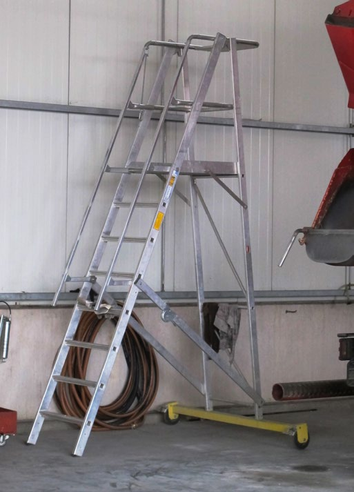
Abb. 30 Podestleiter für höhergelegene Arbeiten
| |
|
Beste Praxis
Immer wieder wird beobachtet, dass Fahrer und Fahrerinnen von Erdbaumaschinen sich nicht anschnallen, obwohl Gurtsysteme in den Maschinen eingebaut sind. Die Fahrer und Fahrerinnen fühlen sich durch die nicht nachgebenden Gurte eingeengt. Dies kommt bei ALR Gurten (Automatic Locking Retractor) vor, die sich automatisch nachspannen und nicht wieder entspannen.
Neue Gurtsysteme, die auch in PKWs verwendet werden, geben nach und ziehen sich nicht fest. Diese ELR-Gurtsysteme (Emergency Locking Retractor) bieten mehr Bewegungsfreiheit, da der Gurtaufroller im Normalfall nicht blockiert. Wir empfehlen die ELR-Gurtsysteme. Fragen Sie den Maschinenhersteller nach diesem Gurtsystem. |
|
3.3 Instandhaltungsarbeiten
Häufige Unfallursache bei Instandhaltungsarbeiten ist eine unzureichende Planung. Daher müssen die Arbeiten sorgfältig geplant werden und für die jeweiligen Arbeiten qualifiziertes Personal eingesetzt werden. Insbesondere sind
- die Verwendung von geeignetem Material und Werkzeug und
- die Koordination und die Information aller Betroffenen
zu gewährleisten.
Durch vorbeugende Instandhaltungsmaßnahmen können Sie unvorhergesehene Störungen reduzieren.
| |
|
Beste Praxis
Sicherheitscheck: BG RCI-Merkblatt A 016
"Gefährdungsbeurteilung: Sieben Schritte zum Ziel" |
3.3.1 Betonmischer
Zu den Instandhaltungsarbeiten an Betonmischern zählen z. B. das Nachstellen, Austausch und Einstellen der Mischwerkzeuge, der Austausch von Wand- und Bodenverschleißblechen incl. Auslassschieber, das Tauschen von Schläuchen. Bei diesen Arbeiten besteht die Gefahr, dass durch unwirksame Verriegelungseinrichtungen und fehlende allpolige Abschaltungen schwere bzw. tödliche Verletzungen entstehen.
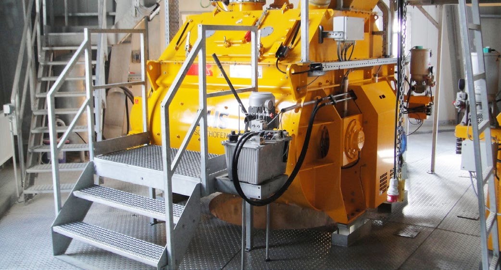
Abb. 31 Betonmischer mit Einstiegshilfe – Podest
|
Weitere Informationen
|
- DGUV Information 203-004 "Einsatz elektrischer Betriebsmittel bei erhöhter elektrischer Gefährdung"
- DGUV Information 205-002 "Brandschutz bei feuergefährlichen Arbeiten"
- DGUV Information 209-015 "Instandhaltung – sicher und praxisgerecht durchführen"
- Leitmerkmalmethode der BAuA zur Beurteilung von Heben, Halten, Tragen.
|
|
Gefährdungen
|
- Gequetscht werden von bewegten Teilen, wie z. B. Betonmischerdeckel, Rührwerk, Austragsschieber,Beschickerkübel, Verschleißteilen.
- Schnittverletzung an scharfkantigen Bauteilen.
- Verschüttet werden durch Zusatzstoffe und Bindemittel.
- Gefährdung durch automatische Hochdruckreinigungsanlagen.
- Verletzen beim Arbeiten im Betonmischer und beim Ein-/Ausstieg.
- Abstürzen bei Instandhaltungsarbeiten.
- Lärm- und Staubeinwirkung.
- Getroffen werden von herabfallenden Betonresten und Gegenständen unterhalb des Betonmischers.
- Elektrische Gefährdung beim Arbeiten im Betonmischer.
- Brandgefahr durch Feuerarbeiten.
- Gefährdung durch Arbeiten in engen Räumen, z. B. psychische und physische Belastungen. Körperliche Beanspruchung durch Arbeit in Zwangshaltung und das Bewegen und Halten schwerer Gewichte, z. B. Verschleißteile, Betonmischerarme.
- Gefährdung durch Schweißrauche.
- Gefährdung durch Überdruck bei nicht bestimmungsgemäßer Verwendung der Handhebel-Fettpresse.
- Witterungsbedingte Gesundheitsgefahren durch Zug, Nässe und Kälte, z. B. beim Wegbringen, Holen und Transportieren der Ersatzteile ins Freie.
- Gefährdung durch unzureichende Einweisung und Unterweisung der Beschäftigten von Fremdfirmen.
Diese Gefährdungen können Sie mit folgenden Maßnahmen reduzieren:
|
|
Maßnahmen
|
- Legen Sie die Abläufe der Reparatur fest und berücksichtigen Sie im Zusammenhang mit den durchzuführenden Instandhaltungsarbeiten alle konkreten Gefährdungen. Bei regelmäßig wiederkehrenden Arbeiten können Sie die Abläufe und Maßnahmen in einer Betriebsanweisung festlegen. Hierbei ist die Bedienungsanleitung des Herstellers zu berücksichtigen.
- Bei Reparatur- oder Wartungsarbeiten am/im Betonmischer oder seinen Antriebsteilen muss der elektrische Antrieb allpolig vom Netz getrennt und gegen Wiedereinschalten gesichert werden.
- Restenergien müssen vor Beginn der Arbeiten unwirksam gemacht werden, z. B. bei pneumatisch oder hydraulisch betriebenen Schiebern und Klappen.
- Sorgen Sie dafür, dass die Antriebe von z. B. Klappen, Schiebern, Kübelaufzugsbahnen von allen Energiearten getrennt werden und gesichert werden.
- Sorgen Sie für sichere Anschlagpunkte und eine sichere Befestigung der aufgeklappten Betonmischerdeckel mit einer formschlüssigen Sicherung (z. B. Einhängekette). Lassen Sie die Vorrichtungen (z. B. Winden, Ketten) regelmäßig prüfen.
- Sollten Sie Druckluftkanonen im Mischerbereich verwenden, stellen Sie sicher, dass diese entspannt und gesichert werden.
- Lassen Sie automatische Hochdruckreinigungsanlagen sicherheitstechnisch so gestalten, dass beim Öffnen und bei geöffneten Betonmischerdeckeln und Sichtöffnungen ein Anlaufen der Reinigungsanlage zwangsläufig ausgeschlossen ist.
- Automatische Hochdruckreinigungsanlagen müssen allpolig abgeschaltet, entspannt und gegen Wiedereinschalten gesichert sein.
- Verwenden Sie Ein- bzw. Ausstiegshilfen im Bereich der Betonmischer, wie z. B. Tritte oder Treppen.
- Achten Sie darauf, dass Werkzeuge sicher abgelegtwerden, um ein unbeabsichtigtes Hineinstürzen in den Betonmischer zu vermeiden.
- Sorgen Sie dafür, dass bei Arbeiten im Betonmischer Personen nicht abstürzen.
- Stellen Sie Ihren Beschäftigten persönliche Schutzausrüstungen wie Sicherheitsschuhe, Schutzhelm, Schutzbrille, geeignete Schutzhandschuhe (zum Beispiel nitrilgetränkte Baumwollhandschuhe), Winterschutzkleidung und ggf. Gehörschutz zur Verfügung und sorgen Sie dafür, dass diese getragen wird.
- Wird im Betonmischer gearbeitet, müssen die Maßnahmen bei "Arbeiten in engen Räumen" berücksichtigt werden. Alleinarbeit ist nicht zulässig.
- Kommen elektrische Geräte zum Einsatz, müssen zusätzlich die Schutzmaßnahmen bei "Arbeiten unter erhöhter elektrischer Gefährdung" eingehalten werden. Setzen Sie z. B. Akkuwerkzeuge, Trenntrafos oder Schutzkleinspannung ein.
- Beim Tausch von Verschleißteilen besteht häufig die Notwendigkeit die Mischwerkzeuge zu positionieren. Wenn dazu die Vor-Ort-Steuerung benutzt wird, schalten Sie nach dem Positionieren wieder allpolig ab.
- Treffen Sie Maßnahmen des vorbeugenden Brandschutzes (z. B. Substitution von feuergefährlichen Stoffen) und stellen Sie sicher, dass geeignete Löscheinrichtungen zu Verfügung gestellt werden.
- Setzen Sie nur Beschäftigte ein, die gesundheitlich für Arbeiten in engen Räumen geeignet sind.
- Sorgen Sie für die Verwendung von Hebehilfen bei Gewichten mit mehr als 15 bzw. 25 kg und vermeiden Sie das regelmäßige Heben und Tragen von schweren Lasten.
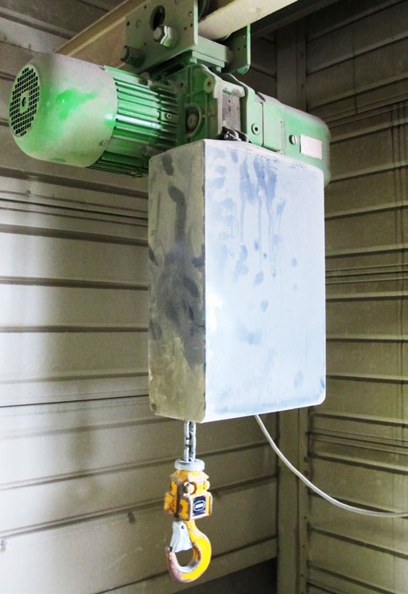
Abb. 32 Hebezeug im Werk
- Sorgen Sie durch technische bzw. organisatorische Maßnahmen dafür, dass die Belastungen bei Arbeiten in Zwangshaltungen vermieden oder minimiert werden.
- Sperren Sie den Gefahrbereich unterhalb des Betonmischers, wenn dort Arbeiten durchgeführt werden.
- Bei Schweißarbeiten sorgen Sie für geeignete Absauganlagen, welche den Rauch an der Entstehungsstelle aufnehmen. Sorgen Sie für ausreichende Raumlüftung, z. B. durch raumlufttechnische Anlagen. Stellen Sie darüber hinaus geeignete persönliche Schutzausrüstungen zur Verfügung, z. B. Atemschutz.
- Erstellen Sie Betriebsanweisungen auf der Grundlage Ihrer betrieblichen Gefährdungsbeurteilung und der Bedienungsanleitung des Betonmischerherstellers.
- Sorgen Sie dafür, dass Abschmierarbeiten von einem sicheren Arbeitsplatz aus durchgeführt werden und weisen Sie auf die hohen Drücke bei manuellen Fettpressen hin. Achten Sie darauf, dass
- Hochdruckschläuche der Fettpressen nicht geknickt, verdreht oder gedehnt werden
- kein Überdruck durch Verlängerungen an den Handhebel-Pressen erzeugt wird.
- Verlegen Sie die Schmierstellen mit Hilfe von Leitungen so, dass sie im Normalbetrieb auch ohne Demontage von Sicherheitseinrichtungen erreicht werden können.
- Sehen Sie möglichst Zentralschmieranlagen bzw. zentrale Schmierstellen vor.
- Wenn Sie Fremdfirmen einsetzen, sorgen Sie dafür, dass diese die betrieblichen Arbeitsschutzregeln Ihres Unternehmens kennen und beachten. Lassen Sie sich dies schriftlich bestätigen.
- Sorgen Sie dafür, dass die Arbeiten koordiniert werden.
|
3.3.2 Schrapper
Die Schrapperanlage muss regelmäßig gewartet werden. Hierzu gehören Abschmierarbeiten, Kontrolle der Auslegerkonstruktion, Kontrolle und Wechsel der Seile oder Seilrollen sowie die Kontrolle der Sicherheitseinrichtungen und Warnleuchten. Bei einigen Arbeiten an den Seilen und Rollen muss der Ausleger soweit möglich abgesenkt und über dem Boden abgestützt werden. Da diese Arbeiten in regelmäßigen Abständen anfallen, muss bei der Inbetriebnahme des Antriebmotors und der Bremseinrichtung des Hubwerks mit Störungen gerechnet werden. Weitere Wartungsarbeiten müssen im Bereich des Materialabzugs ausgeführt werden. Hierzu muss der Gefahrbereich der abfördernden Einrichtungen (z. B. Schrägaufzugskübel) betreten werden.
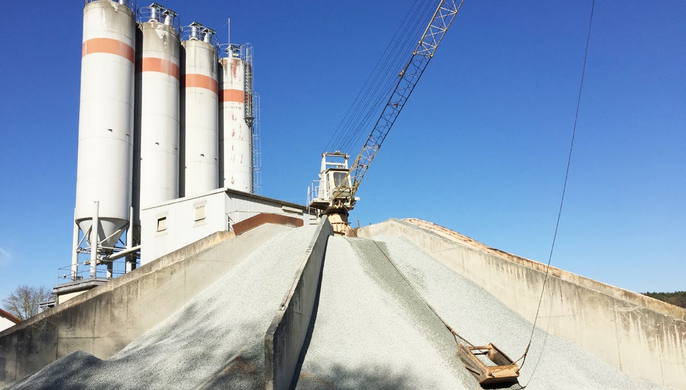
Abb. 33 Sternanlage
|
Weitere Informationen
|
- BG RCI Praxishandbuch D 1.1 "Schrapper und Materialboxen"
|
|
Gefährdungen
|
- Quetschen an bewegten Teilen am Schrapper, wie z. B. Schürfkübel und Steuerungseinrichtung.
- Abstürzen in die Materialboxen oder verschüttet werden bzw. vom Seil getroffen werden beim Seilwechsel.
- Abstürzen bei Instandhaltungsarbeiten am Schrapper.
- getroffen werden durch Herabfallen des Auslegers.
- Stich- und Schnittverletzung durch gebrochene Seillitzen.
- Gefährdung durch unzureichende Einweisung und Unterweisung der Beschäftigten von Fremdfirmen.
Diese Gefährdungen können Sie mit folgenden Maßnahmen reduzieren:
|
3.3.3 Recyclinganlage
In regelmäßigen Abständen sind an Recyclinganlagen Instandsetzungsarbeiten durchzuführen. Aufgrund des unerwarteten zyklischen Anlaufens der Anlage kann es zu Unfällen kommen, weil die Anlagen vor Beginn der Arbeiten nicht allpolig vom Netz getrennt werden. Wichtig ist die eindeutige Beschriftung der Bedienelemente, um das sichere Abschalten zu gewährleisten.
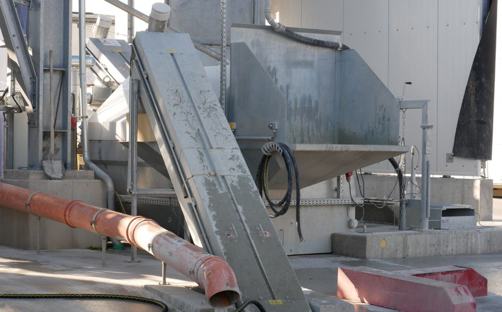
Abb. 35 Recyclinganlagen mit abgedeckten Absetzbecken
|
Weitere Informationen
|
- Bedienungsanleitung des Herstellers
- BG RCI-Praxishandbuch "Arbeitssicherheit und Gesundheitsschutz in der Baustoffindustrie" Kapitel D1.2 "Restbetonrecycling"
- Informationsblatt FB HM-015:03/2018 "Hydraulik-Schlauchleitungen – Prüfen und Auswechseln" des Fachbereichs Holz und Metall der DGUV
|
|
Gefährdungen
|
- Getroffen, erfasst bzw. eingezogen werden durch Anlagenteile beim zyklischen Anlaufen der
- Förderschnecke
- Förderbänder
- Auswaschtrommel
- Rührwerke
- Quetschen durch bewegte Teile, wie z. B. hydraulischer Beschicker.
- Absturz in das Absetz- oder Rührwerksbecken oder von der Recyclinganlage.
- Schnittverletzungen durch scharfkantige Anlagenteile und Werkzeuge.
- Hautreizungen und Augenverletzungen durch Restschlamm und -wasser.
- Elektrische Gefährdung, z. B. bei Schweißarbeiten, Reparaturen an der elektrischen Anlage.
- Belastung durch Heben und Tragen schwerer Lasten.
- Lärmeinwirkung.
Diese Gefährdungen können Sie mit folgenden Maßnahmen reduzieren:
|
3.3.4 Fördereinrichtungen und Waagen
Von Fördereinrichtungen und Waagen gehen hohe Gefährdungen aus, insbesondere bei Instandhaltungsarbeiten. Daher beachten Sie die unten beschriebenen Maßnahmen.
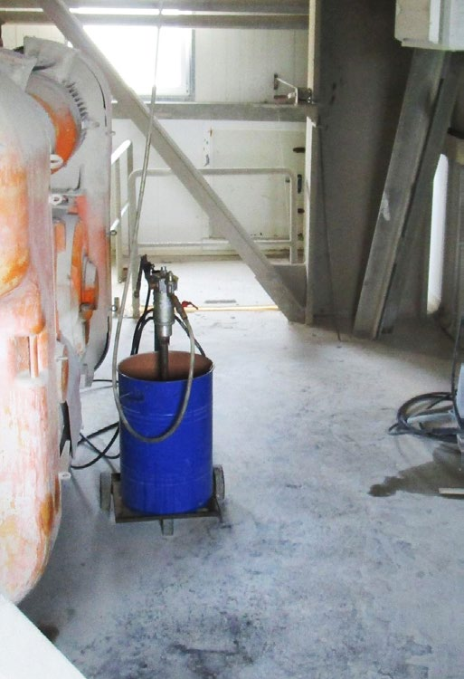
|
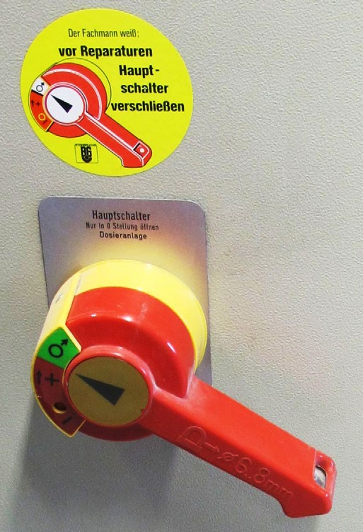
|
Abb. 37 pneumatische Fettpresse |
Abb. 38 Hauptschalter |
|
Weitere Informationen
|
- DIN EN 620:2011-07 "Stetigförderer und Systeme - Sicherheits- und EMV-Anforderungen an ortsfeste Gurtförderer für Schüttgut"
|
|
Gefährdungen
|
- Stolpern und Stürzen z. B. durch
- herumliegende Anlagen- und Konstruktionsteile
- herumliegendes Werkzeug
- Schläuche und Kabel
- Absturz durch
- demontierte Bodenabdeckungen
- demontierte Absturzsicherungen
- fehlende Arbeitsbühnen
- Arbeiten an hochgelegenen Arbeitsstellen
- Quetsch- und Scherstellen insbesondere
- an Einzugsstellen von Förderbändern
- Kübelschrägaufzügen und Schnecken
- durch unvorhersehbar bewegte Teile oder Fördereinrichtungen
- Lärm- und Staubeinwirkung durch eingesetzte Werkzeuge und Maschinen an Fördereinrichtungen und Waagen.
- Getroffen oder verschüttet werden von herabfallendem oder austretendem Fördergut.
- Brandentstehung durch Feuerarbeiten.
- Durch Witterungseinflüsse im Winterbetrieb bestehen erhöhte Gefährdungen z. B. durch
- Ausrutschen, Abrutschen, Stürzen auf rutschigen Untergründen
- Einschränkung der Bewegungsfreiheit wegen beengter Bekleidung
- schlechte Lichtverhältnisse.
- Gefährdungen durch Arbeiten in beengten Platzverhältnissen mit Zwangshaltungen.
- Erhöhte elektrische Gefährdung bei Arbeiten in engen Räumen.
- Belastung durch Heben und Tragen schwerer Lasten.
- Gefährdung durch unzureichende Einweisung, Unterweisung der Beschäftigten von Fremdfirmen.
Diese Gefährdungen können Sie mit folgenden Maßnahmen reduzieren:
|
|
Maßnahmen
|
|
Allgemein
- Legen Sie die Abläufe der Reparatur fest und berücksichtigen Sie im Zusammenhang mit den durchzuführenden Instandhaltungsarbeiten alle konkreten Gefährdungen. Bei regelmäßig wiederkehrenden Arbeiten können Sie die Abläufe und Maßnahmen in einer Betriebsanweisung festlegen. Hierbei ist die Bedienungsanleitung des Herstellers zu berücksichtigen.
- Unterweisen Sie regelmäßig Ihre Beschäftigten über die Gefährdung der anstehenden Arbeiten.
- Achten Sie bei allen Instandhaltungsarbeiten darauf, dass gegenseitige Kommunikation besteht.
- Achten Sie darauf, dass Arbeitsplätze und Verkehrswege von umherliegenden Konstruktionsteilen, Werkzeugen, Schläuchen und Kabeln beräumt werden.
- Decken Sie Bodenöffnungen mit tragfähigen Materialien ab und sichern Sie diese gegen unbeabsichtigtes Verrutschen.
- Sorgen Sie dafür, dass für die Durchführung von Instandhaltungsarbeiten Arbeitsbühnen vorhanden sind.
- Sind Instandhaltungsarbeiten von fest installierten Bühnen und Laufstegen nicht möglich, stellen Sie Hubarbeitsbühnen oder vergleichbare Arbeitsmittel zur Verfügung, z. B. beim Rollenwechsel an hochgelegenen Stellen eines Förderbandes.
- Sofern Sie persönliche Schutzausrüstungen gegen Absturz einsetzen müssen, beachten Sie alle erforderlichen organisatorischen Maßnahmen für einen sicheren Einsatz, wie z. B. sichere Anschlagpunkte, Auswahl gesundheitlich geeigneter Personen, Organisation der Rettung im Notfall, regelmäßige Unterweisung der Mitarbeitenden, Prüfung der persönlichen Schutzausrüstungen gegen Absturz.
- Trennen Sie den elektrischen Antrieb vor der Durchführung von Instandsetzungsarbeiten allpolig vom Netz und sichern Sie diesen gegen Wiedereinschalten. Berücksichtigen Sie hierbei die Restenergien z. B. von pneumatischen und hydraulischen Anlagen. Gewährleisten Sie, dass vor dem Betreten von gesicherten Bereichen gefahrbringende Bewegungen verhindert werden, z. B. Bolzensicherung an Kübelaufzugsbahnen.
- Entfernen Sie nur die Schutzeinrichtungen, die für die Durchführung der Arbeiten entfernt werden müssen und bringen Sie diese unverzüglich nach Beendigung der Arbeiten wieder an.
- Prüfen Sie regelmäßig die Funktion der Stellungsüberwachung der Zugangstüren (Verriegelungseinrichtung).
- Sorgen Sie dafür, dass Unbeteiligte die Reparaturstelle nicht betreten.
- Wenn Sie Fremdfirmen einsetzen, sorgen Sie dafür, dass diese die betrieblichen Arbeitsschutzregeln Ihres Unternehmens kennen und beachten. Lassen Sie sich dies schriftlich bestätigen. Sorgen Sie dafür, dass die Arbeiten koordiniert werden.
Förderbänder
- Um den Reinigungsaufwand zu minimieren, sorgen Sie dafür, dass Gurtabstreifer und Leitbleche regelmäßig kontrolliert und instandgesetzt werden.
- Achten Sie darauf, dass Spanneinrichtungen auch bei installierten Schutzeinrichtungen zu betätigen sind.
- Um ein sicheres Abschmieren zu gewährleisten, achten Sie darauf, dass Ihre Anlagen z. B. mit Dauerschmiereinrichtungen ausgerüstet sind.
Becherwerk
- Sorgen Sie dafür, dass
- Inspektionsöffnungen eine gefahrlose Kontrolle der Becher ermöglichen, z. B. mit durchgriffsicheren Schutzgittern.
- Bei Instandsetzungsarbeiten am Becherwerk bei Trennen des Förderstranges das Last- bzw. Leertrum im Gleichgewicht steht bzw. arretiert ist, um ein Herabfallen des Förderstranges zu vermeiden.
Kübelaufzug
- Sorgen Sie dafür, dass
- Instandhaltungsarbeiten im Gefahrbereich des Aufzugskübels nur bei abgeschaltetem Antrieb des Kübels und eingesteckten Sicherungsbolzen erfolgen.
- der Kübel unmittelbar über den Bolzen positioniert wird.
- ein sicherer Standplatz bei Arbeiten im Bereich der Materialaustragsschieber vorhanden ist.
- die abfördernden Einrichtungen sicher abgeschaltet sind.
- die Materialschieber sich infolge von Restenergien nicht gefährdend bewegen.
- Beim Betreten des Materialkübels, die Beschickung durch ungewolltes Anlaufen verhindert wird.
- Kontrollieren Sie in regelmäßigen Abständen die Seile des Kübelaufzuges und tauschen Sie diese rechtzeitig aus.
- Sorgen Sie dafür, dass Druckluftkanonen oder Rüttler bei Arbeiten in diesem Bereich für alle Energieartenabgeschaltet und gesichert sind.
- Druckluftkanonen müssen Sie zusätzlich entlüften.
- Für die Durchführung des Seilwechsels achten Sie auf einen sicheren Standplatz der Beschäftigten.
Abschmieren
- Lassen Sie Abschmierarbeiten von einem sicheren Standplatz ausführen und weisen Sie auf die hohen Drücke bei manuellen Fettpressen hin. Achten Sie darauf, dass
- Hochdruckschläuche der Fettpressen nicht geknickt, verdreht oder gedehnt werden
- kein Überdruck durch Verlängerungen an den Handhebel-Pressen erzeugt wird
- Verlegen Sie die Schmierstellen mit Hilfe von Leitungen so, dass sie im Normalbetrieb auch ohne die Demontage von Sicherheitseinrichtungen erreicht werden können.
- Sehen Sie möglichst Zentralschmieranlagen oder zentrale Schmierstellen vor.
- Durch das Anbringen von Schmierleitungen können Sie das Demontieren von Schutzeinrichtungen und Arbeiten in der Höhe vermeiden.
Waage
Sehen Sie möglichst ein Verfahren zur Waagenkontrolle vor, bei dem keine Gewichte von Hand getragen werden müssen. Geeignete Kontrollgewichte sind mit den Waagen so zu verbinden, dass sie
- im Ruhezustand keinen Einfluss auf die Waagen haben
- im Zuge der Kontrolle durch mechanische Systeme, z. B. Pneumatik-Zylinder angehoben werden können, um diese zu belasten.
Sofern der Einsatz einer solchen Kontrolleinrichtung nicht möglich ist, sorgen Sie für Vorrichtungen, die das Kontrollieren der Waagen unter ergonomisch günstigen Bedingungen ermöglicht, z. B. geeignete Lastaufnahmemittel und Arbeitsbühnen, welche die Last sicher aufnehmen können.
Prüfen Sie, ob der Einsatz von Lastaufnahmeeinrichtungen, z. B. Gabelstapler, möglich ist. Begrenzen Sie die Gesamtmenge der Auflasten auf ein Minimum und setzen Sie bei der Waagenkontrolle Totlasten und die Materialbefüllung ein, um die erforderliche Höchstlast zu erreichen.
|
3.3.5 Silos
Besondere Gefährdungen bei Arbeiten in oder an Silos entstehen beim Einfahren oder Einsteigen in Silos. Dies kann notwendig sein zur Durchführung von Instandsetzungsarbeiten oder zur Beseitigung von Störungen z. B. Materialbrücken oder Verstopfungen. Diesbezüglich sind besondere Schutzmaßnahmen vorzusehen.
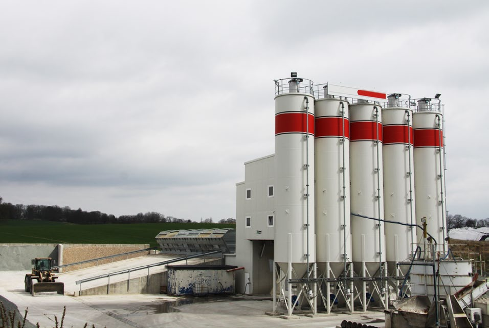
Abb. 39 Silos bei einer Frischbetonanlage
|
Weitere Informationen
|
- DIN EN 617:2001 + A1:2010 "Stetigförderer und Systeme – Sicherheits- und EMV-Anforderungen an Einrichtungen für die Lagerung von Schüttgütern in Silos, Bunkern, Vorhaltsbehältern und Trichtern." Ausgabedatum: 2011-06
- BG RCI-Praxishandbuch "Arbeitssicherheit und Gesundheitsschutz in der Baustoffindustrie" A 2.14 "Betrieb von Silos" und A 2.15 "Arbeiten in Silos"
- Unfallbrennpunkt der BG RCI: "Arbeiten im Silo"
- Unfallbrennpunkt der BG RCI: "Silobefüllung"
- ISO DIN 14122:2016-10 "Sicherheit von Maschinen – Ortsfeste Zugänge zu maschinellen Anlagen"
|
|
Gefährdungen
|
- Vom Füllgut getroffen bzw. verschüttet werden.
- Absturz vom oder ins Silo.
- Eingezogen werden und Versinken im Schüttgut durch z. B. Einstürzen von Hohlräumen, Abziehen des Schüttgutes.
- Gequetscht werden in den Austragseinrichtungen und Fördereinrichtungen.
- Verletzungen durch unkontrolliert austretende Füllgüter wie z. B. Zementstaub.
- Elektrische Gefährdung durch die Benutzung von ungeeignetem Werkzeug in engen Räumen.
- Gesundheitsgefährdende Atmosphäre im Silo, z. B. durch Sauerstoffmangel oder Schweißrauche.
- Verletzung durch Messeinrichtungen im Silo, z. B. durch ionisierende Strahlung.
- Bei Arbeiten in Silos werden Werkzeuge und Maschinen eingesetzt, bei denen mit erhöhter Lärm- und Staubeinwirkung zu rechnen ist.
- Schlechte Sichtverhältnisse aufgrund von Dunkelheit und Staub.
- Verbrühung durch Wasserdampf bei beheizbaren Silos.
- Verletzungen durch Druckluftkanonen.
- Keine wirksame Erste Hilfe durch mangelnde Organisation (keine ausreichenden Rettungsmöglichkeiten).
Diese Gefährdungen können Sie mit folgenden Maßnahmen reduzieren:
|
|
Maßnahmen
|
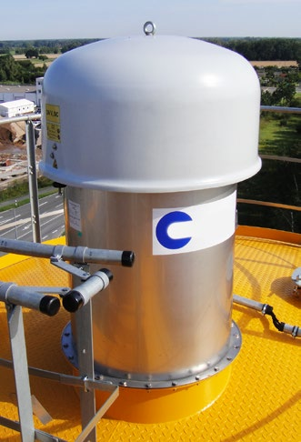
|

|
Abb. 40 Filteranlage auf einem Silo |
Abb. 41 Quetschventil BG RCI Praxishandbuch |
Bei Siloarbeiten beachten Sie grundsätzlich Folgendes
|
3.4 Fahrmischer auf dem Betriebsgelände
3.4.1 Betrieb des Fahrmischers
Durch den Betrieb des Fahrmischers im Frischbetonwerk entstehen eine Vielzahl von Gefährdungen, z. B. beim Fahren, Rangieren, Be- und Entladen und Auffüllen von Zusatzmitteln. Beim Rangieren (Rückwärtsfahren) sind geeignete Sicherheitsmaßnahmen zu treffen.
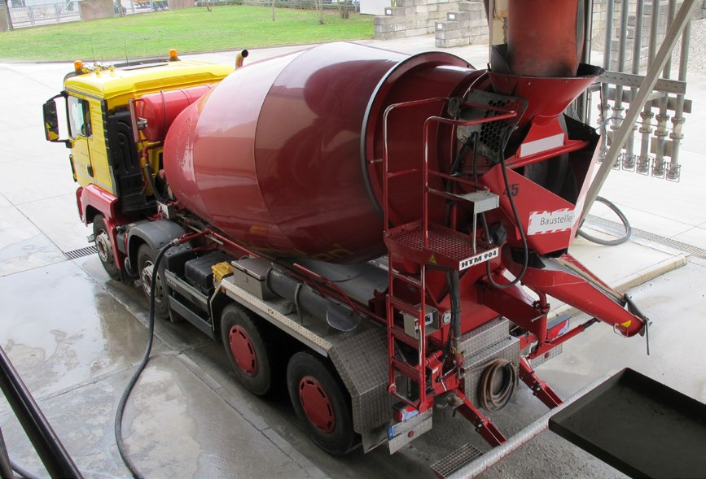
Abb. 43 Beladung Fahrmischer
|
Weitere Informationen
|
- Bedienungsanleitungen von Fahrzeugen und Aufbauten
|
|
Gefährdungen
|
- Abrutschen/Umknicken beim Ein- und Aussteigen aus dem Fahrerhaus.
- Abrutschen/Umknicken beim Auf- und Absteigen vom Arbeitspodest, z. B. bei
- der Zugabe von Zusatzmitteln
- Reinigungsarbeiten.
- Quetschen beim Ausfahren der Leiter.
- Abstürzen beim Besteigen der Fahrzeugkonstruktion.
- Anfahren, Erfassen, Überrollen, Quetschen von Personen beim Rückwärtsfahren und Rangieren auf dem Betriebsgelände.
- Verletzungen, z. B. Verbrühungen, durch defekte oder platzende Wasser- oder Fließmittelschläuche.
- Verbrühungen durch heißes Wasser im Winter.
- Einzugs-/Quetschgefahr am Einfülltrichter.
- Verlieren von Frischbeton.
- Reizungen und gefährliche Augenverletzungen durch Zusatzmittel oder Recyclingwasser.
- Verätzungen durch Betonlöser.
- psychische Belastung, z. B. durch Zeitdruck, hohes Arbeitsaufkommen.
- Verletzungen durch unsachgemäßen Transport von z. B. Gefahrstoffen im Fahrerhaus.
- Lärmbelastung beim Be- und Entladevorgang des Fahrmischers im Bereich des Fahrzeuges.
- Verletzung durch unsachgemäße Einrichtungen am Fahrzeug oder Aufbau.
Diese Gefährdungen können Sie mit folgenden Maßnahmen reduzieren:
|
|
Maßnahmen
|
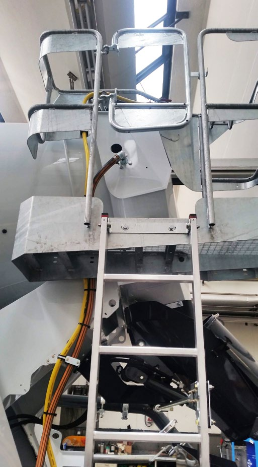
Abb. 44 klappbare Absturzsicherung am Aufstieg
- Achten Sie bei Ihren Fahrzeugen darauf, dass der Aufstieg zum Fahrerhaus ausreichend breit, unbeschädigt und trittsicher ist und die Haltegriffe möglichst groß und beidseitig vorhanden sind.
- Leiteraufstiege zum Arbeitspodest müssen stabil ausgeführt und trittsicher sein.
- Weisen Sie die Fahrer und Fahrerinnen an, dass Aufstiege oder/und Haltegriffe immer im vom Hersteller vorgesehenen Zustand zu erhalten sind.
- Unterweisen Sie Ihre Betonmischerfahrer und -fahrerinnen, dass
- die vorhandenen Aufstiege zu benutzen sind und nicht aus der Fahrerkabine abgesprungen werden darf.
- die Aufstiegsleitern richtig eingerastet und positioniert sind.
- Weisen Sie die Fahrer und Fahrerinnen von Betonmischern darauf hin, dass die Fahrwege bei allen Fahrbewegungen einsehbar sein müssen.
- Setzen Sie z. B. Einweiser, Rückfahrüberwachungseinrichtungen und an unübersichtlichen Verkehrsstellen Spiegel ein, um die Sichtverhältnisse zu verbessern.
- Ist ein Rückwärtsfahren nicht zu vermeiden, setzen Sie gemäß Ihrer Gefährdungsbeurteilung eine oder mehrere der folgenden Maßnahmen um:
- Einweiser einsetzen und auf gegenseitigen Blickkontakt und eindeutige Absprache der Zeichengebung hinweisen,
- Rückfahrwarneinrichtungen installieren (akustisch und visuell),
- Kameraassistenzsysteme, z. B. 360° Rundumsicht (Birdview),
- Ausreichende Abstände zu allen Verkehrsteilnehmern und Objekten (seitlicher Abstand rund um den Fahrmischer),
- max. Schrittgeschwindigkeit fahren.
- Achten Sie darauf, dass Schläuche und Druckleitungen am Fahrzeug regelmäßig geprüft werden.
- Haben Sie Fahrzeuge mit Druckbehältern an Bord, dann sind diese regelmäßig durch eine zur Prüfung befähigte Person zu prüfen.
- Stellen Sie Ihren Beschäftigten persönliche Schutzausrüstungen wie Sicherheitsschuhe, Schutzhelm, Schutzbrille, geeignete Schutzhandschuhe (zum Beispiel nitrilgetränkte Baumwollhandschuhe) und ggf. Gehörschutz zur Verfügung und sorgen Sie dafür, dass diese getragen wird.
- Stellen Sie im Arbeitsbereich Augenspüleinrichtungen zur Verfügung.
- Achten Sie darauf, dass Ihre Fahrzeuge mit einem Schutzgitter zwischen Aufgabetrichter und Mischertrommel ausgerüstet sind und überprüfen Sie diese regelmäßig.
- Stellen Sie sicher, dass bei der Aufgabe von Zusatzmitteln keine Absturzgefahr besteht, z. B. durch die Verwendung geeigneter Fördereinrichtungen.
- Sorgen Sie dafür, dass die Arbeitsbühne des Fahrmischers gesichert ist z. B. mit einem Geländer und einer Bügelsicherung im Bereich der Steigleiter.
- Weisen Sie Ihre Beschäftigten darauf hin, dass die Geländer nicht be- bzw. überstiegen werden. Stellen Sie geeignete Hilfsmittel zu Verfügung z. B. Podestleitern, Arbeitsbühnen.
- Wenn die Zusatzmittel nicht im Werk zugegeben werden können, sorgen Sie dafür, dass bei der Zugabe am Fahrmischer ein Vorratsbehälter mit Dosierpumpe und Schlauchleitungen zum Aufgabetrichter vorgesehen ist und dieses Behältnis sicher verstaut werden kann.
- Unterweisen Sie das Fahrpersonal
- über alle sicherheitstechnisch relevanten Fahrzeugdaten, z. B. das zulässige Gesamtgewicht, die Höhe des Fahrzeuges,
- dass vor Beginn jeder Arbeitsschicht die Wirksamkeit der Betätigungs- und Sicherheitseinrichtungen geprüft und während der Arbeitsschicht der Zustand der Sicherheitseinrichtungen auf augenfällige Mängel beobachtet wird,
- dass festgestellte Mängel dem oder der zuständigen Aufsichtsführenden bei Wechsel des oder der Fahrzeugführenden mitgeteilt werden,
- dass bei Mängeln, welche die Betriebssicherheit gefährden, der Betrieb einzustellen ist.
- Achten Sie auf die Einhaltung der zulässigen Arbeits- und Lenkzeiten.
- Treffen Sie Maßnahmen gegen das Verlieren von Frischbeton während der Fahrt.
- Vermeiden Sie den Aufenthalt beim Beladevorgang im Bereich des Fahrmischers. Sollte dies nicht möglich sein, stellen Sie Gehörschutz zur Verfügung.
- Erstellen Sie für den Betrieb eines Fahrmischers unter Berücksichtigung der Betriebsanleitung des Herstellers eine Betriebsanweisung.
- Unterweisen Sie regelmäßig Ihre Beschäftigten auf Grundlage der Betriebsanweisung.
- Weisen Sie Ihre Fahrer an, vor dem Verlassen des Führerhauses die Feststellbremse zu betätigen.
- Konstruktive Änderung an dem Fahrzeugaufbau oder Fahrgestell sind mit dem Hersteller abzusprechen.
- Vor der Teilnahme am öffentlichen Straßenverkehr sind die Fahrzeuge zu reinigen.
| |
|
Beste Praxis
Weisen Sie durch Hinweisschilder am rechten Fahrzeugheck auf den toten Winkel hin. Um das Risiko weiter zu reduzieren, weisen Sie Ihre Fahrer und Fahrerinnen an, alle Spiegel richtig einzustellen und zu reinigen. Zudem ist die Installation von Abbiegeassistenzsystemen ratsam. |
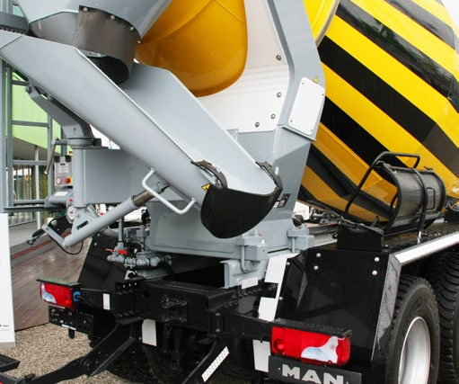
|
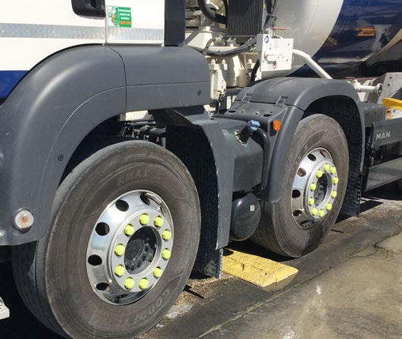
|
Abb. 45 Gewinner des BG RCI Förderpreis "Sicherheit auf allen Wegen" 2015 – Auslaufschutz für Betonrutschen |
Abb. 46 Bodenschwelle um ungewolltes Bewegen des Fahrmischers zu vermeiden |
|
3.4.2 Instandhaltungsarbeiten des Fahrmischers
An jedem Fahrmischer müssen nach dem Einsatz bestimmte Arbeiten durchgeführt werden. Hierbei entstehen besondere Gefährdungen, z. B. beim Abschmieren des Laufrings und beim Beseitigen von Restbetonteilen in der Fahrmischertrommel.
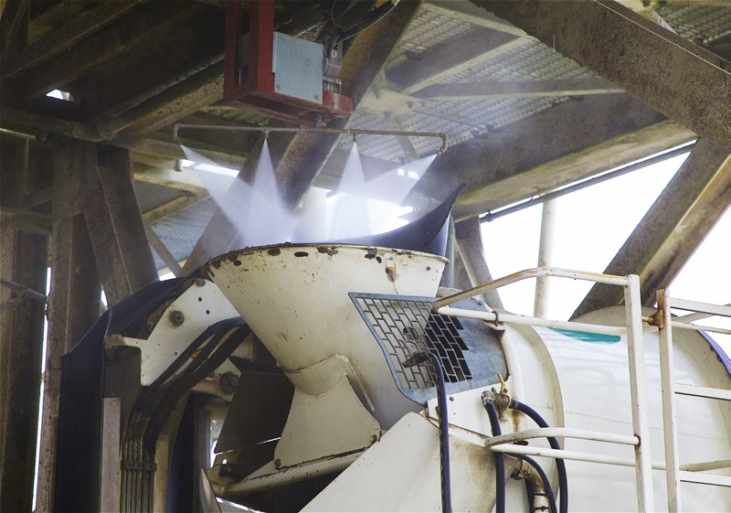
Abb. 47 Technische Lösung zur Reinigung des Einlauftrichters am Fahrmischer
|
Weitere Informationen
|
- BG RCI-Praxishandbuch "Arbeitssicherheit und Gesundheitsschutz in der Baustoffindustrie", Kapitel A 4.5 "Arbeiten in engen Räumen"
- Sicherheitsdatenblätter für Reinigungsmittel
|
|
Gefährdungen
|
- Beim Abschmieren des Laufrings und des Trommelantriebs:
- Einzug am Laufring
- Absturz vom Fahrzeug
- Einzug am Antrieb der Fahrmischertrommel.
- Bei der Reinigung des Fahrmischers:
- Einzug am Laufring
- Absturz vom Fahrzeug
- Einzug am Antrieb der Fahrmischertrommel
- Verletzungen durch Wasserstrahl oder gelöste Betonreste
- Verletzungen beim Abschlagen der Betonreste mit dem Hammer
- Verätzungen durch Betonlöser
- Reizungen und gefährliche Augenverletzungen durch Zusatzmittel oder Recyclingwasser
- Verbrühung durch heißes Wasser.
- Bei Arbeiten in der Fahrmischertrommel
-
Verletzungen durch Drehen/Anlaufen der Trommel
- Verletzungen durch sich lösende Betonbrocken oder -schollen
- Schnittgefahr an scharfen Kanten
- Elektrische Gefährdung bei Arbeiten mit ungeeigneten elektrischen Betriebsmitteln in der Mischertrommel
- Körperliche Belastung durch Zwangshaltung
- Keine wirksame Erste Hilfe durch mangelnde Organisation (fehlende Rettungsmöglichkeiten)
- Gequetscht werden im Mannloch der Fahrmischertrommel
- Hohe Belastung durch Lärm und Staub.
- Psychische Belastungen durch z. B. Zeitdruck, Überstunden.
Diese Gefährdungen können Sie mit folgenden Maßnahmen reduzieren:
|
|
Maßnahmen
|
- Sorgen Sie dafür, dass das Abschmieren des Laufrings bei laufender Trommel in ablaufender Drehrichtung aus sicherer Position durchgeführt wird, z. B. mit Fettpresse, Pinsel.
- Erstellen Sie für die Instandhaltung und Reinigung der Fahrmischer unter Berücksichtigung der Betriebsanleitung des Herstellers Betriebsanweisungen.
- Unterweisen Sie regelmäßig Ihre Beschäftigten auf Grundlage der Betriebsanweisung.
- Weisen Sie die Beschäftigten darauf hin, dass die Bedienungsanleitung des Herstellers im Fahrzeug griffbereit aufzubewahren ist.
Tägliche Reinigung des Fahrmischers:
- Stellen Sie für Reinigungsarbeiten an Fahrmischern geeignete Arbeitsflächen, z. B. Podestleitern, Arbeitsbühnen zur Verfügung.
- Beachten Sie die aktuellen Sicherheitsdatenblätter, technischen Merkblätter und erstellen Sie für die Arbeitsplätze und den Umgang mit den Gefahrstoffen Betriebsanweisungen.
- Stellen Sie Ihren Beschäftigten persönliche Schutzausrüstungen, z. B. Sicherheitsschuhe, Schutzbrille, geeignete Schutzhandschuhe (zum Beispiel nitrilgetränkte Baumwollhandschuhe), wasserabweisende Kleidung und ggf. Gehörschutz zur Verfügung und sorgen Sie dafür, dass diese getragen wird.
- Stellen Sie im Arbeitsbereich Augenspüleinrichtungen zur Verfügung.
- Weisen Sie die Beschäftigten an, dass bei Arbeiten mit erhöhtem Wasserdruck keine Personen gefährdet werden.
Innenreinigung der Fahrmischertrommel:
- Prüfen Sie die Möglichkeit, die Innenreinigung der Fahrmischertrommel mannlos, z. B. durch Hochdruckwasserstrahlsysteme, durchzuführen.
- Muss zum Reinigen in die Fahrmischertrommel eingestiegen werden, beachten Sie die Maßnahmen bei "Arbeiten in engen Räumen", insbesondere bei erhöhter elektrischer Gefährdung, und schließen Sie Alleinarbeit aus.
- Legen Sie in der Betriebsanweisung fest, dass
- bei Reinigungsarbeiten in der Trommel die Antriebe abgeschaltet und gegen Wiedereinschalten gesichert sind; der Fahrzeugschlüssel ist von der ausführenden Person mitzuführen.
- die Fahrmischertrommel formschlüssig gegen ungewolltes Drehen gesichert ist.
- Sorgen Sie für geeignete Aufstiegsmöglichkeiten, z. B. Podestleitern, um in die Mischertrommel zu gelangen.
- Stellen Sie Ihren Beschäftigten persönliche Schutzausrüstungen wie z. B. Sicherheitsschuhe, Schutzhelm, Schutzbrille, geeignete Schutzhandschuhe, Gehörschutz und Staubschutz zur Verfügung und sorgen Sie dafür, dass diese getragen wird.
- Beachten Sie die Bedienungsanleitungen der Hersteller.
- Sorgen Sie bei schlechten Sichtverhältnissen für ausreichende Beleuchtung.
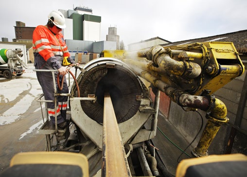
Abb. 48 Hochdruckwasserstrahlsysteme zur Fahrmischertrommel-Reinigung
|
3.5 Innerbetrieblicher Verkehr im Frischbetonwerk
Auf dem Betriebsgelände findet vielfältiger innerbetrieblicher Verkehr statt. So benutzen z. B. gewerbliche und private Kunden, Zulieferer und auch eigene Beschäftigte mit Fahrzeugen dieselben Verkehrsflächen. Durch deren Zusammentreffen entstehen vielfältige Gefährdungen.
Für betriebsfremde Personen und Fahrzeuge bestehen besondere Verkehrssicherungs- und Informationspflichten für Sie als Unternehmer oder Unternehmerin.
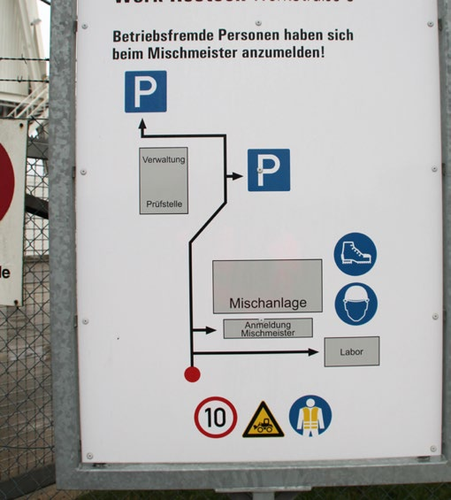
|
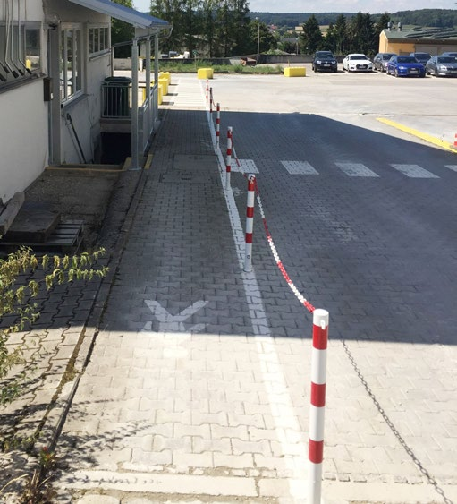
|
Abb. 49 Informationstafel |
Abb. 50 Trennung der Verkehrswege |
|
Weitere Informationen
|
- BVNI-Info 1/2001 https://www.bv-miro.org/downloads/miro-info/Info_01.pdf
Betriebsgelände ist oftmals öffentlicher Verkehrsraum
- Rechtsgrundlagen
- Abgrenzungen
- Konsequenzen
- DIN ISO 7010:2012-10 "Graphische Symbole – Sicherheitsfarben und Sicherheitszeichen – Registrierte Sicherheitszeichen"
|
|
Gefährdungen
|
- Anfahren von Personen durch Fahrzeuge.
- Kollision von Fahrzeugen.
- Umkippen von Fahrzeugen beim Abladen in Materialboxen etc.
- Verletzungen beim Fahren mit hochstehender Fahrzeugmulde, z. B. durch Anstoßen an feststehenden Teilen oder Berühren von stromführenden Leitungen.
- Stolpern, Stürzen, Ausrutschen, z. B. aufgrund von Verunreinigungen (z. B. durch Gesteinskörnungen), herumliegende Wasserschläuche, defekte Stufen, Stolperstellen, Schlaglöcher, mit Trennmittel benetzte Verkehrswege.
- Ausrutschen auf Eisflächen.
- Quetschen, getroffen werden im Arbeitsbereich des automatisiert betriebenen Schrappers z. B. des Kübels.
- Herabfallende Betonreste aus dem Betonmischerauslasstrichter im Beladeportal.
- Hineinstürzen, Versinken und Ertrinken in Wasserabsetzbecken der RC-Anlage.
Diese Gefährdungen können Sie mit folgenden Maßnahmen reduzieren:
|
|
Maßnahmen
|

Abb. 51 ausgehängter Verkehrswegeplan
- Weisen Sie separate Verkehrswege für Personen- und Fahrzeugverkehr aus, z. B. durch Markierungen.
- Installieren Sie an unübersichtlichen Verkehrsbereichen Sichthilfsmittel, z. B. Verkehrsspiegel.
- Legen Sie Regelungen zur Verkehrsführung, auch Einbahnstraßen, Wartebereichen, Parkflächen und Sperrzonen aus.
- Legen Sie Verkehrsregelungen fest, z. B. Vorfahrtsregelungen, Geschwindigkeitsbegrenzungen auf dem Betriebsgelände. Beachten Sie dabei, dass das Aufstellen von Verkehrszeichen gemäß StVO an bestimmte Festlegungen gebunden ist. Diesbezüglich erteilt Ihnen die zuständige Behörde Auskunft.
- Weisen Sie unmittelbar im Eingangsbereich des Betriebsgeländes, z. B. durch eine deutlich sichtbare Informationstafel, auf
- die Regelungen des innerbetrieblichen Verkehrs,
- die Pflicht zum Tragen von PSA oder Warnkleidung, z. B. Sicherheitsschuhe, Warnweste,
- Ansprechpartner, z. B. Betriebsleiter, Disponent hin.
- Weisen Sie insbesondere Betriebsfremde darauf hin, dass bestimmte Arbeitsbereiche auf dem Betriebsgelände nicht betreten werden dürfen und informieren Sie diese über die festgelegten Verkehrswege.
- Weisen Sie auf die besonderen Gefahren, z. B. Radladerverkehr und Schrapperbetrieb hin und sperren Sie Gefahrbereiche, die nicht betreten werden dürfen, ab.
- Sorgen Sie für ausreichende Beleuchtung der Verkehrswege.
- Ist ein Rückwärtsfahren nicht zu vermeiden, setzen Sie gemäß Ihrer Gefährdungsbeurteilung eine oder mehrere der folgenden Maßnahmen um:
- Einweiser einsetzen und auf gegenseitigen Blickkontakt und eindeutige Absprache der Zeichengebung hinweisen.
- Rückfahrwarneinrichtungen installieren (akustisch und visuell).
- Kameraassistenzsysteme, z. B. 360° Rundumsicht (Birdview).
- Ausreichende Abstände zu allen Verkehrsteilnehmenden und Objekten (seitlicher Abstand rund um den Fahrmischer).
- max. Schrittgeschwindigkeit fahren.
- Sorgen Sie dafür, dass die Verkehrswege frei von Stolperstellen und herumliegenden Gegenständen sind.
- Sorgen Sie dafür, dass Wasser durch Gefälle in den Verkehrsflächen und Wasserabläufen schnell abfließen kann.
- Setzen Sie bei Schnee und Eis die allgemeine Räum- und Streupflicht um. Führen Sie einen Räum- und Streuplan ein.
- Sorgen Sie dafür, dass Personen, die aus Türen oder von Treppen heraustreten, durch z. B. Geländer nicht direkt in Fahrzeugverkehrswege gelangen können.
- Sorgen Sie für eindeutige Regelung zum Befahren des Beladebereiches, z. B. mittels einer Ampel.
- Sorgen Sie dafür, dass Kippstellen im Werk eben sind. Müssen Fahrzeuge zum Abkippen eine Schräge befahren und die Gefahr des Abstürzens/Umstürzens besteht, sind Maßnahmen gegen das Überfahren der Kanten zu treffen, z. B. Leitplanken, Wall, Mauer.
- Installieren Sie in den Bereichen, in denen Anlagenteile von Fahrzeugen beschädigt werden können, einen entsprechenden Anfahrschutz.
- Sorgen Sie dafür, dass beim Fahren im Gelände, unabhängig von der Geschwindigkeit, immer der Sicherheitsgurt angelegt wird.
- Stellen Sie sicher, dass Ihre Beschäftigten sowie betriebsfremde Personen auf Ihrem Betriebsgelände immer Warnkleidung tragen.
|
3.6 Labor
3.6.1 Probennahme und Prüfung von Ausgangsstoffen
Die wesentlichen Ausgangsstoffe für Frischbeton sind Gesteinskörnungen, Bindemittel, Zusatzstoffe, Zusatzmittel und Zugabewasser. Alle Komponenten sind im Zuge der Eingangskontrolle zu beproben und auf ihre technischen Eigenschaften hin zu überprüfen. Hierbei hängen die Gefährdungen für die Probennehmenden und Laboranten von den jeweiligen Eigenschaften der Ausgangsstoffe ab.
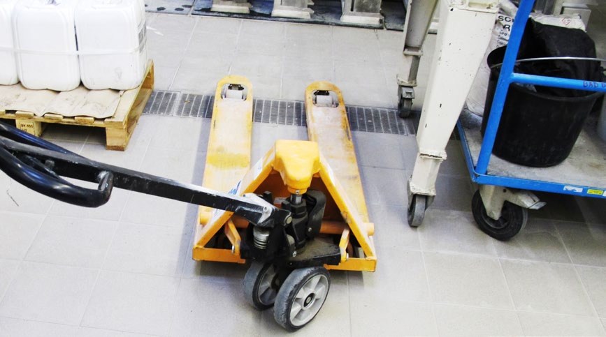
Abb. 52 Hubwagen zum Transport von schweren Lasten
|
Weitere Informationen
|
- DGUV Information 213-850 "Sicheres Arbeiten in Laboratorien"
- IFA Report Gefahrstoffliste und/oder
- GisChem – Gefahrstoffinformationssystem
|
|
Gefährdungen
|
- Staubeinwirkungen beim Umgang mit Ausgangsstoffen.
- Reizung der Haut durch Bindemittel, Zusatzstoffe oder Recyclingwasser.
- Belastung der Atemwege, z. B. durch Bindemittel, silikogene Stäube, Microsilika und Farbstoffe.
- Stolpern und Abstürzen bei der Probennahme, z. B. am Fahrzeug.
- Getroffen werden von herabfallenden Gesteinskörnungen, z. B. bei der Probennahme.
- Ange- und Überfahren werden im Zuge der Materialanlieferung oder Beschickung.
- Belastung des Muskel- und Skelettsystems durch den Transport von schweren Gebinden und Einzelproben.
- Stürzen, Stolpern über Lagerprodukte in Lagerräumen.
- Chemische Einwirkungen durch Zusatz- und Prüfmittel wie Laugen oder Säuren, z. B. auf Haut, Schleimhäute und Augen.
- Umgang mit heißen Medien bei der Trocknung von Ausgangsstoffen.
- Lärm.
Diese Gefährdungen können Sie mit folgenden Maßnahmen reduzieren:
|
|
Maßnahmen
|
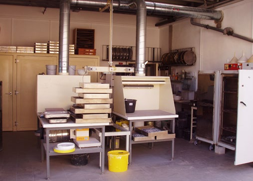
Abb. 53 Labor für Gesteinskörnungen mit Absaugung
- Stellen Sie Ihren Beschäftigten persönliche Schutzausrüstungen wie Sicherheitsschuhe, Schutzhelm, Schutzbrille, geeignete Schutzhandschuhe (z. B. nitrilgetränkte Baumwollhandschuhe) und ggf. Gehörschutz zur Verfügung und sorgen Sie dafür, dass diese getragen wird.
- Achten Sie darauf, dass die Beschäftigten die Transportgebinde geschlossen halten.
- Sorgen Sie für eine ordnungsgemäße Lagerung der Proben, z. B. ausreichend tragfähige Regaleinrichtungen.
- Für den Transport der Gebinde halten Sie die Massen möglichst klein, unter 25 bzw. 15 kg.
- Sorgen Sie dafür, dass beim Umgang insbesondere mit quarzhaltigen Gesteinskörnungen oder Zusatzstoffen eine geeignete Absaugung und ggf. Luftreinigung im Labor durchgeführt wird.
- Stellen Sie bei Laborsiebmaschinen die Lärmemissionen fest und kapseln Sie diese lärmtechnisch ab.
- Kennzeichnen Sie Transportgebinde eindeutig.
- Lagern Sie Säuren und Laugen auf geeigneten Lagerstellen.
- Stellen Sie Augenspülflaschen zu Verfügung.
- Lassen Sie sich die aktuellen Sicherheitsdatenblätter aller Ausgangsstoffe und Prüfmittel, die im Labor Verwendung finden, aushändigen.
- Unterweisen Sie alle Beschäftigten hinsichtlich der darin verfassten Gefährdungen.
- Achten Sie darauf, dass alle notwendigen sicherheitsrelevanten Maßnahmen, welche die Hersteller festlegen, beachtet werden.
- Erstellen Sie entsprechende Betriebsanweisungen.
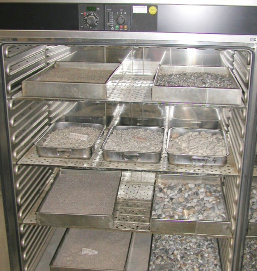
|
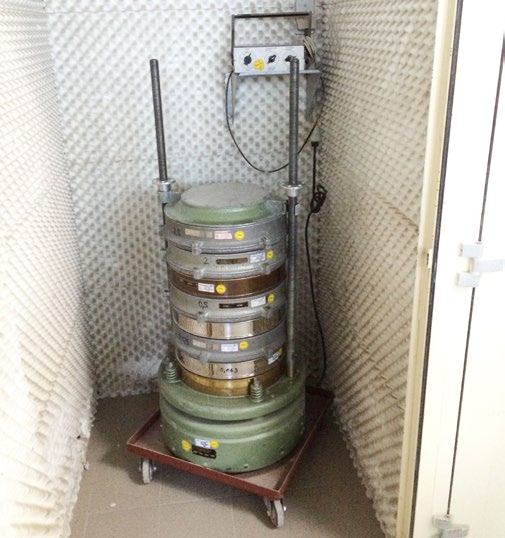
|
Abb. 54 Trocknung von Ausgangsstoffen |
Abb. 55 Labor Siebmaschine im Schallschutzschrank |
|
3.6.2 Probennahme und Prüfung von Frischbeton
Die Frischbetonprüfung beginnt mit der Inaugenscheinnahme des frisch hergestellten Betons noch in der Mischanlage, dem Transportfahrzeug oder dem Befüllen der Schalung. Im Anschluss erfolgen die Beprobung und die Durchführung der Einzelprüfungen. Bei all diesen Tätigkeiten entstehen unterschiedliche Gefährdungen.
Abb. 56 magnetischer Rütteltisch – reduziert Lärmbelastung
|
Weitere Informationen
|
- DGUV Information 205-030 "Umgang mit ortsbeweglichen Flüssiggasflaschen im Brandeinsatz"
- IGV Industrieverband e. V.
https://www.industriegaseverband.de/downloads
- Sicherheitsdatenblätter
|
|
Gefährdungen
|
|
|
Abb. 57 Laborbetonmischer |
Abb. 58 Hebehilfe für schwere Probekörper |
- Stolpern, Umknicken und Absturz bei der Inaugenscheinnahme des Frischbetons im und am Fahrzeug oder Transportgefäß.
- Ausrutschen im Labor, z. B. durch verschüttete bzw. ausgelaufene Flüssigkeiten, schmierige Stoffe.
- An- und Umgefahren werden von Fahrzeugen auf dem Betriebsgelände.
- Reizungen von Haut, Augen und Schleimhäuten durch z. B. Trennmittel, Schalöle, Beton- und Wasserspritzer.
- Durch Trennmittel und Schalöle sind Einwirkungen auf den menschlichen Organismus möglich, z. B. auf Haut, Schleimhäute und Augen. Diese Gefährdungen sind stoffspezifisch und dem jeweils aktuellen Sicherheitsdatenblatt zu entnehmen.
- Belastung des Muskel- und Skelettsystems durch den manuellen Transport von schweren Proben und durch die Handhabung der auf dem Fußboden stehenden Prüfgeräte.
- Verletzung durch herabfallende Probekörper und Formen.
- Quetschen, Lärm und ggf. Vibrationen bei der Herstellung von Probekörpern mittels Rütteltisches oder der Durchführung von Ausbreitmaßen.
- Einzugsgefahr und Lärmeinwirkung am Labormischer.
- Brandgefahr, Verbrennungen beim Umgang mit heißen Medien, z. B. beim Darren und Trocknen von Frischbeton.
- Austreten von Gas und die damit verbundenen Gefährdungen auch in Laborfahrzeugen.
- Erhöhte elektrische Gefährdung in Nassbereichen.
- Getroffen werden durch Verrutschen und Herausfallen von ungesicherter Ladung im Laborfahrzeug.
Diese Gefährdungen können Sie mit folgenden Maßnahmen reduzieren:
|
|
Maßnahmen
|
- Achten Sie darauf, dass die Arbeitsplätze und Verkehrswege regelmäßig gereinigt werden.
- Sorgen Sie dafür, dass die Laborböden mit rutschhemmenden Belägen ausgestattet sind.
- Gestalten Sie den Arbeitsplatz ergonomisch günstig, z. B. hinsichtlich der Höhe, dem Einsatz von Hebehilfen mit Klemmzangen bei größeren Gewichten.
- Sorgen Sie für sichere Lagermöglichkeiten von Probekörpern, z. B. durch geeignete Regalanlagen.
- Achten Sie darauf, dass alle Sicherheitseinrichtungen des Labor-Zwangsmischers regelgerecht ausgeführt sind und prüfen Sie dies gemäß der Betriebssicherheitsverordnung und den Herstellerangaben.
- Im Bereich mit erhöhter elektrischer Gefährdung müssen Sie zum Schutz Ihrer Beschäftigten besondere Maßnahmen treffen, z. B. Einsatz von Trenntransformatoren, Fehlerstromschutzschaltern.
- Veranlassen Sie, dass für alle elektrischen Einrichtungen die notwendigen elektrischen Prüfungen durchgeführt werden.
- Lassen Sie sich die Sicherheitsdatenblätter aller Ausgangsstoffe und Prüfmittel, die im Labor Verwendung finden aushändigen und
- unterweisen Sie alle Beschäftigten hinsichtlich der darin aufgeführten Gefährdungen.
- Achten Sie darauf, dass alle notwendigen sicherheitsrelevanten Maßnahmen, die die Hersteller festlegen, beachtet werden.
- Ermitteln Sie die Lärmbelastung beim Einsatz der Verdichtungseinrichtungen und sorgen Sie ggf. dafür, dass Lärmminderungsmaßnahmen, z. B. die Gummierung der Rüttelplatte, durchgeführt werden.
- Sorgen Sie dafür, dass bei der Handhabung und Lagerung von Gasflaschen die entsprechenden Regelungen beachtet werden.
- Lassen Sie das Darren nur in gut belüfteten Räumen oder im Freien durchführen.
- Achten Sie darauf, dass Schläuche und Druckregler an Darrgeräten und sonstigen Brennern regelmäßig durch eine zur Prüfung befähigte Person geprüft werden.
- Treffen Sie Maßnahmen des vorbeugenden Brandschutzes (z. B. Substitution von feuergefährlichen Stoffen) und stellen Sie sicher, dass geeignete Löscheinrichtungen zur Verfügung gestellt werden.
- Sorgen Sie dafür, dass Ihre Fahrzeuge mit Möglichkeiten der Ladungssicherung ausgerüstet sind. Achten Sie insbesondere auf die Vorgaben für den Transport von Gasflaschen.
- Stellen Sie Ihren Beschäftigten persönliche Schutzausrüstungen wie Sicherheitsschuhe, Schutzhelm, Schutzbrille, geeignete Schutzhandschuhe (zum Beispiel nitrilgetränkte Baumwollhandschuhe) und ggf. Gehörschutz zur Verfügung und sorgen Sie dafür, dass diese getragen wird.
- Lassen Sie die Hebezeuge im Labor regelmäßig prüfen.
| |
|
Beste Praxis
Lärmminderung am Rütteltisch bei der Verdichtung von Beton-Probekörpern Förderpreis der BG RCI "Produktion von Betonprobekörpern lärmarm und vibrationsfrei" Förderpreis der BG RCI |
|
3.6.3 Prüfung von Festbeton
Nach der Aushärtung und normgerechten Lagerung von Betonprobekörpern sind die Festbetonprüfungen durchzuführen.
Abb. 59 Sichere Stapelung von Probekörpern
|
Gefährdungen
|
- Stolpern, Umknicken.
- Belastung des Muskel- und Skelettsystems durch den Transport von schweren Probekörpern.
- Verletzungen durch herabfallende Probekörper.
- Verletzungen an scharfen Kanten z. B. an Probekörpern.
- Beim Sägen oder Schleifen von Prüfkörpern entstehen zusätzliche Gefahren durch
- Quetschen, Scheren und Schneiden von Gliedmaßen
- Lärmentwicklung
- rotierende Teile.
- Gefahr von Verletzungen durch Betonabplatzungen bei Druckprüfungen.
- Elektrische Gefährdung im Wasserbecken.
- Reizungen von Haut, Augen und Schleimhäuten beim Umgang mit Trennmitteln.
- Verätzungen und weitere Hautschädigungen bei Umgang und Lagerung von Säuren.
- Quetschen, getroffen werden beim Ausschalen mit z. B. druckluftbetriebenen Werkzeugen.
Diese Gefährdungen können Sie mit folgenden Maßnahmen reduzieren:
|
|
Maßnahmen
|
Abb. 60 Prüfpresse mit Splitterschutz
- Gestalten Sie den Umgang mit Probekörpern im Labor ergonomisch günstig und sicher, so dass die einzelnen Probekörper auch gut zugänglich sind und die Arbeitshöhe optimiert ist. Der Einsatz von Hebehilfen, z. B. Klemmzangen ist zu empfehlen.
- Sorgen Sie für Ordnung und Sauberkeit in allen Bereichen des Labors.
- Beachten Sie die aktuellen Sicherheitsdatenblätter, technischen Merkblätter und erstellen Sie für die Arbeitsplätze und den Umgang mit den Gefahrstoffen Betriebsanweisungen.
- Stellen Sie Ihren Beschäftigten persönliche Schutzausrüstungen wie Sicherheitsschuhe, Schutzhelm, Schutzbrille, geeignete Schutzhandschuhe und ggf. Gehörschutz zur Verfügung und sorgen Sie dafür, dass diese getragen wird.
- Führen Sie regelmäßige Kontrollen der Sicherheitseinrichtungen z. B. an der Prüfpresse, Sägen, Schleifmaschinen durch und dokumentieren Sie diese.
- Im Bereich mit erhöhter elektrischer Gefährdung müssen Sie zum Schutz Ihrer Beschäftigten besondere Maßnahmen treffen, z. B. Einsatz von Trenntransformatoren, Fehlerstromschutzschaltern.
- Veranlassen Sie, dass für alle elektrischen Einrichtungen die notwendigen elektrischen Prüfungen durchgeführt werden.
- Sorgen Sie dafür, dass die Druckluftzufuhr bei Entschalungsarbeiten angepasst ist.
|